Week 1: Why Invest? Beating Inflation Is the Whole Game
1. Why This Is Important
Open any introductory finance textbook and you will see the same chart: a smooth curve labelled "$10,000 invested at 8% per year." After thirty years, you are a millionaire. After forty, you are wealthy. Compounding does the work.
That chart is a fairy tale. Where, in 2026, do you find a steady, risk-free 8% per year? You don't. Treasury bills paid roughly half a percent for most of the post-2008 decade. Investment-grade bonds got crushed in
30%-up years and 40%-down years and dead-flat decades — never as a smooth line. The textbook chart, drawn straight, exists to sell investing as a math problem with a guaranteed answer. It isn't. There is no risk-free 8%. There never was.
The same goes for the Rule of 72 — "your money doubles every nine years at 8%." Useless. Steady 8% doesn't exist, and the moment you replace the constant with the actual year-by-year sequence of returns, the rule breaks. The "rule" is a parlour trick that works only on the imaginary growth path the textbook already drew for you.
So why bother investing at all? Because the alternative is worse. **You are already in a bet you didn't choose** — the bet that the cash in your bank account will hold its purchasing power. It will not. Inflation is the gravitational force every investor has to fight just to stand still. The question is never "should I take risk?" — you are already taking the inflation risk, whether you act or not. The question is: **which risk pays you to bear it?**
This course exists to answer that question honestly. The short version, which the rest of this lesson builds out:
- **You have to beat inflation, or you get poorer in real terms even while
- **Stocks (and a few real assets like gold and productive real estate) are
- *Bonds used to* beat inflation, in the disinflationary regime from 1982
To make this concrete, take the last 55 years and run a thought experiment with three savers. Starting in 1971, each one deposits exactly $10,000 a year — same nominal amount, every year, no exception. The only thing that differs is where they put it.
- Person A keeps it in cash. No bank, no interest. Pure currency,
- Person B parks it in short-term US Treasury bills, the safest
- Person C puts it in the S&P 500 with all dividends reinvested.
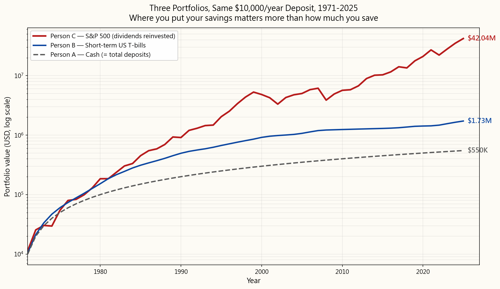
After 55 years, each person has deposited the same $550,000 of their own money. But the end balances are not in the same league:
- Person C — S&P 500: $42,041,000 nominal, **$5,079,000 in 1971
- Person B — T-bills: $1,725,000 nominal, $208,000 in 1971 dollars —
- Person A — Cash: $550,000 nominal, $66,000 in 1971 dollars —
This is the picture you should keep in your head for the rest of the course. Person C wins not because the S&P 500 paid a magical, smooth 10% — it didn't, that path included the 1973-74 bear, the 1987 crash, the 2000-02 dot-com bust, the 2008 GFC, and the 2020 COVID crash — but because **stocks were the only one of the three that stayed reliably ahead of the currency debasement they were all running against**. The race is not against zero. It is against inflation. Win that, and compounding takes over the rest. Lose it, and no amount of "discipline" or "saving" will save you.
2. What You Need to Know
2.1 Inflation: The Number They Show You Is Not the Number You Pay
The headline number you see on TV — "CPI came in at 2.6% this month" — is the Consumer Price Index (CPI) published by the US Bureau of Labor Statistics. The Federal Reserve targets about 2% per year for it. Pension cost-of-living adjustments, Social Security increases, tax-bracket adjustments, and inflation-linked bonds (TIPS) are all indexed to it.
Here is the problem. **The methodology behind CPI has been changed, repeatedly, in ways that consistently lower the printed number.** Three specific games are worth knowing about.
Game 1: Hedonic adjustment ("the new iPhone has more features"). The BLS reasons that if a new iPhone costs the same as last year's but has a better camera, that is deflationary — you got more product for the same price. Same for cars (more safety features), refrigerators (more capacity), laptops (faster CPU). The BLS adjusts the price downward in CPI to reflect the "extra value." This is called hedonic adjustment, and it has been applied since the late 1990s.
The trouble is that **consumers don't buy iPhone features. They buy an iPhone.** A car is one car, whether or not it has lane-keep assist. A new laptop is one laptop, whether or not the chip is 30% faster. You still need one of the things, and the price you actually hand over is the price tag on the shelf — not some imaginary "feature-adjusted" lower number. By treating quality improvements as price decreases, hedonic adjustment systematically makes reported CPI lower than the prices you actually experience at the register. The Boskin Commission's own 1996 estimate was that hedonic and substitution adjustments together reduce reported CPI by 0.5 to 1.0 percentage points per year — every year, compounding.
There is no widely-published US CPI series that strips out hedonic adjustment alone. The closest popular alternative is John Williams' ShadowStats "1980-based CPI alternate" — an attempt to reconstruct CPI using the pre-1980 BLS methodology, which bundled hedonics together with several other later changes. ShadowStats typically reads 5 to 7 percentage points higher than the official number. Mainstream economists criticize the series for essentially adding a near-constant offset rather than fully recomputing the basket from raw data, and that critique has merit. But even taking the conservative read — that ShadowStats overstates by a few points — the directional message holds: **the number you see on the news is meaningfully lower than the inflation a household actually experiences**, and the BLS has known this for 30 years.
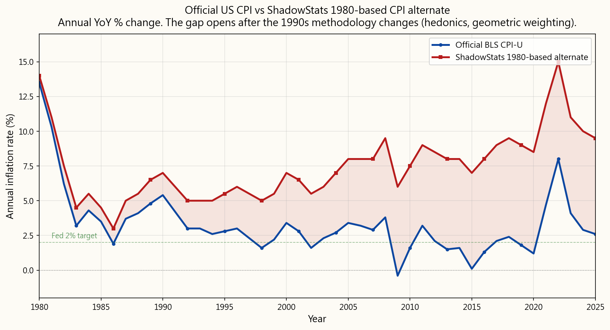
Game 2: Core inflation ("ignore food and energy"). The Fed's preferred inflation measure is Core PCE — Personal Consumption Expenditures, with food and energy stripped out on the grounds that those categories are "volatile." Setting aside that food and energy are arguably the *most important* prices a household pays, the structural effect of stripping them is the same as the hedonic game: the printed number is lower than what people actually experience. PCE itself runs about 0.3 percentage points below CPI on average because of basket weighting differences. Core PCE adds another layer on top of that. The Fed sets monetary policy off this measure.
Game 3: Substitution ("if beef gets expensive, you'll buy chicken"). When a basket item gets relatively more expensive, modern CPI assumes households substitute toward cheaper alternatives — and reduces the weight of the expensive item in the basket. Mathematically: the things you can afford less of count less in the inflation measure precisely because they got expensive. This is called geometric weighting, and it was introduced in the late 1990s. The pre-1980 methodology used arithmetic weights that didn't punish you this way for being priced out.
Why this matters to you, in real money:
- Your pension cost-of-living increase, your Social Security raise,
- Inflation-protected bonds (TIPS) pay a yield linked to the same
- Wage negotiations anchor on official CPI. Over a working career, the
- The Fed's interest rate decisions are based on Core PCE. When the
For your purposes as an investor, the practical implication is simple: **do not anchor your hurdle rate to the official CPI**. Whatever you think you need to earn to "beat inflation," add a couple of points for honesty. If official CPI is 2.5%, plan to need at least 4.5–5% real to actually preserve purchasing power. The chart at the start of this lesson showed what cash does over a working lifetime even at official CPI — the real picture is worse.
2.2 Where Inflation Comes From: Money Printing
The textbook explanation of inflation — "too much money chasing too few goods" — is technically correct but tells you nothing about why there is too much money. The honest answer is: **central banks created it, and governments spent it.** Modern inflation is, first and last, a monetary phenomenon.
Look at the broad money supply (M2) of the major currencies over the last quarter-century, indexed so they all start at 100 in the year 2000:
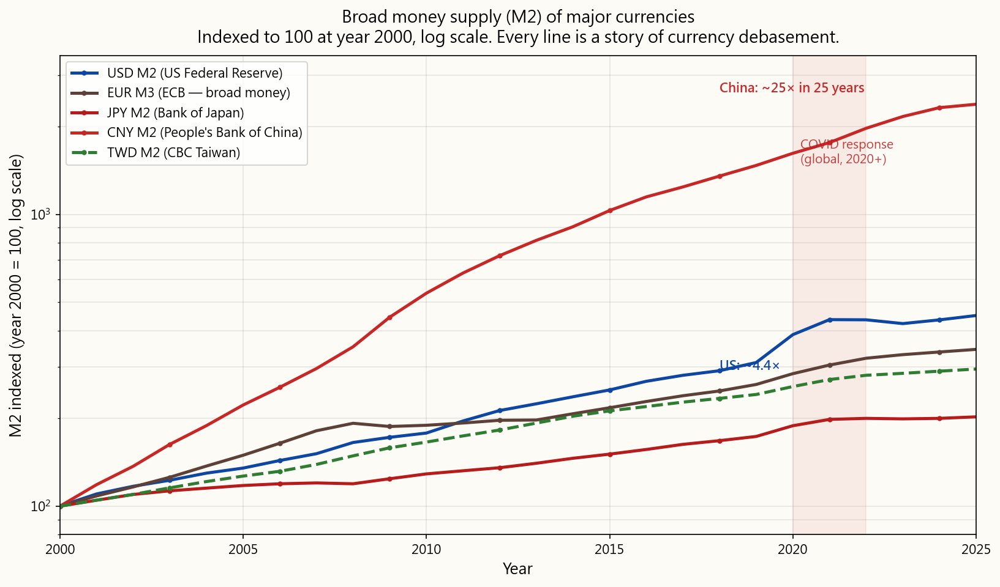
Every major currency has been debased over the period. The **post-2020 vertical move** is unmistakable on every line — the COVID-era response was a synchronised global expansion of money, the largest in modern history outside of wartime. Note the chart uses M2 (currency in circulation + checkable deposits + savings deposits + small time deposits + retail money market funds), not M1. M1 understates the picture; M2 is the closer proxy for "money that is actually doing things in the economy."
The other half of the story is government debt. When a government runs a deficit (spends more than it takes in tax revenue), it issues bonds. When the central bank buys those bonds with newly-created reserves — which is exactly what quantitative easing has been since 2008 — that is monetised debt: spending today, paid for with printed money tomorrow. US national debt and US M2 have grown together, almost in lockstep, because they are two sides of the same monetary act:
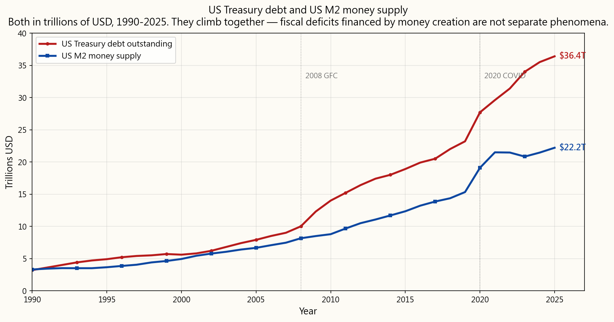
This is the regime, and it has direct consequences for what you can invest in:
because their own debt-service costs would explode. With $36 trillion of federal debt outstanding, every 1% rise in average yield is roughly $360 billion of additional annual interest expense — about 60% of the entire US defence budget. The political incentive to keep rates artificially low, including via central-bank bond buying, is enormous.
government has both the means (a captive central bank) and the motive (debt-service arithmetic) to keep nominal rates below the true inflation rate, the real yield on bonds becomes systematically negative. This is called financial repression, and it is what makes the entire "60/40 stocks-and-bonds" portfolio that worked from 1982 through 2020 structurally suspect going forward.
become the residual stores of value**, because they are denominated in things rather than in the currency the government is debasing. We will spend much of this course on how to own them and at what price.
Compounding, the actual mathematical concept, is real and important — interest on interest does grow exponentially, and the algebra is correct. What is not real is the textbook portrait of a smooth, risk-free 8% line. The currency the line is denominated in is being created at 7–15% per year. There is no risk-free real return at the levels every textbook quotes. The real question is: which assets keep up with the printer, and at what price are they worth holding?
2.3 Real vs. Nominal Returns: The Only Honest Yardstick
Nominal return is the headline number — "the S&P returned 26% last year." Real return is the nominal return minus inflation — what you actually gained in purchasing power.
A quick approximation:
$$ r_{\text{real}} \approx r_{\text{nominal}} - i $$
The exact relationship (the Fisher equation) is:
$$ r_{\text{real}} = \frac{1 + r_{\text{nominal}}}{1 + i} - 1 $$
The approximation is close enough for mental math at low inflation; at high inflation or high return, the exact form matters. At 26% nominal and 7% inflation, the approximation gives 19%; the exact answer is 17.8%. At normal inflation levels the gap is small, but the gap grows with both.
**The honest table — historical real returns by asset class, US, after inflation:**
| Asset class | Nominal (long-run avg) | Real (after inflation) | Beats inflation? |
|---|---|---|---|
| US Stocks (S&P 500, dividends reinvested) | ~10% | ~7% | Yes, reliably |
| Gold | ~7% | ~3–4% | Yes, on long horizons (post-1971) |
| Real estate (broad, with rent) | ~9% | ~3–4% | Yes, on long horizons |
| US Bonds (10-yr Treasury, long-run avg) | ~5% | ~1–2% | Marginally — and not in the 2010s or 2020s |
| US Treasury bills (cash equivalent) | ~3.5% | ~0% | No, post-2008 |
| Savings account | ~1–2% | ~−2 to −5% | No |
| Cash (mattress) | 0% | ~−3 to −7% | No |
The header says "long-run average," and the long run is doing a lot of work in that table. Bonds averaged a positive real return over the full history, but the average is dragged up by the 1982–2020 disinflationary bull market in bonds — a 40-year period of falling interest rates that turned bonds into a total-return engine. **In the 2020s, the 10-year Treasury has delivered deeply negative real returns; the bond bull market is over, and the regime that produced it (see §2.2) has reversed.**
So the table, read honestly for today's regime, collapses to a much shorter list of things that reliably beat inflation:
- Equities (broadly, including productive businesses you own through
- Gold and other monetary metals
- Productive real estate (with cash flow, not raw land)
- Selected commodities (in the right part of the cycle)
This is the foundational discipline of the rest of the course. Every asset we examine, every strategy we teach, will be evaluated against this single test. Nominal returns are theatre. Real returns are the only thing that pays your future grocery bill.
3. Common Misconceptions
**Misconception 1: "I should keep my money in a savings account where it's safe."**
A savings account paying 1–2% in a 5%+ real-inflation environment is one of the most aggressive negative-real-return positions you can hold. It feels safe because the nominal number doesn't go down. It is not safe — it is a slow, almost imperceptible bleed. The slowness is exactly what makes it dangerous: people who "play it safe" lose decades of purchasing power before they realise the game was rigged.
**Misconception 2: "The textbook 8% compounding chart shows what happens if I invest."**
It shows what would happen if 8% real, risk-free returns existed. They don't. Treasury bills paid roughly 0% real for most of the post-2008 decade. The S&P 500 averages about 10% nominal, but as a path of 30%-up years and 40%-down years and dead-flat decades — never as a smooth line. The textbook chart was drawn straight to make compounding look like math; in reality it is a noisy, drawdown-filled climb that requires the psychological ability to keep buying through the drawdowns. That is the actual hard part, and the textbook chart hides it.
**Misconception 3: "Bonds are the safe part of my portfolio that hedges inflation."**
Bonds were an inflation hedge for the 1982–2020 disinflationary regime — the longest bond bull market in history. That regime is over. With central banks captive to government debt-service arithmetic (§2.2), real yields on high-grade bonds have been negative for most of the 2010s and 2020s. The "bonds for safety" rule is recency bias from a regime that no longer applies. Bonds today are a duration bet, not an inflation hedge.
**Misconception 4: "The CPI number on the news is what inflation actually is."**
CPI is a measurement choice, not a fact. It uses hedonic adjustment (a new iPhone with better features is treated as a price decrease), substitution weighting (the things you can afford less of count for less in the basket because you've been priced out of them), and excludes food and energy in the Fed's preferred Core PCE variant. Three different methodology choices that all push the printed number lower than the inflation households actually experience. Anchor your investment hurdle rate to the experienced inflation rate, not the political one.
**Misconception 5: "The Rule of 72 tells me how long it takes my money to double."**
It tells you how long it takes a constant rate of return to double money. Constant rates of return don't exist outside textbook chapter examples. Real returns are sequences with volatility, drawdowns, and regime changes; the rule's "9 years to double at 8%" estimate has nothing to say about a 2008 in the middle of the sequence. The rule is a cute piece of mental arithmetic that works only on the imaginary world the textbook already drew for you.
**Misconception 6: "A 10% gain followed by a 10% loss gets me back to even."**
This is mathematically incorrect. $100 + 10% = $110. Then $110 − 10% = $99. You are down 1%. Losses hurt more than equivalent gains help, because the gain percentage applies to a smaller base after a loss. A 50% loss requires a 100% gain just to break even. A 90% loss requires a 900% gain.
| Loss | Gain needed to recover |
|---|---|
| −10% | +11.1% |
| −20% | +25.0% |
| −30% | +42.9% |
| −50% | +100.0% |
| −75% | +300.0% |
| −90% | +900.0% |
Mathematically, after a loss of size \(L\), the recovery gain needed is
$$ G = \frac{L}{1 - L} $$
which grows much faster than \(L\) itself once \(L\) gets large. This is why managing downside risk matters more than maximising upside returns, and why the "safe" T-bill path that never has a 50% drawdown is not strictly worse than the equity path in psychological terms — even if the equity path wins on long-run real return.
Misconception 7: "Investing is gambling."
Gambling has a negative expected return — the house always wins, and the mathematical expectation is for you to lose. Investing in productive assets (equities representing claims on real cash flows from real businesses) has a historically positive expected return — you are getting paid for capital provision and risk-bearing. Short-term speculation on individual stocks can resemble gambling. Long-term diversified ownership of productive equity is fundamentally different, and the math reflects that.
Misconception 8: "I need a lot of money to start investing."
You don't. Most brokerages offer $0 minimums and fractional shares. The binding constraint is rarely the size of the first deposit; it is the discipline to keep depositing through the inevitable drawdowns. Someone who puts $100 a month into a broad index fund from age 25 onward — and keeps doing it through every 30% bear market the next forty years bring — will end up far ahead of someone who puts $50,000 in at age 25, panics out at the first drawdown, and never re-enters. Behaviour beats balance.
4. Q&A
**Q1: If the textbook 8% chart is a fairy tale, what return should I actually expect?**
A: Two honest answers, both useful:
- **For broad US equities (S&P 500, dividends reinvested), the long-run
- The path is not smooth. In any given year the market might return
For bonds, T-bills, and savings accounts: assume zero or negative real return in the current regime. Anything better is a bonus.
**Q2: Why do you say the Rule of 72 is useless? It's mathematically correct.**
A: The math is correct for a constant rate of return. The problem is that constant rates of return don't exist — they are a textbook abstraction. In the real world, returns are sequences with order, volatility, and regime changes, and the order matters: a −40% year early in the sequence does much more damage than a −40% year late, because there is more capital to lose early on. The Rule of 72 has nothing to say about sequence risk, which is the actual risk you are bearing. As a sanity check on a quoted average rate, the rule is fine. As a planning tool, it is misleading.
Q3: Why specifically can't I trust the official CPI?
A: Three methodology choices, all introduced gradually and all pushing the printed number lower:
- Hedonic adjustment (a new product with more features is treated as
- Substitution / geometric weighting (the items you can afford less
- Core inflation (food and energy excluded from the Fed's preferred
The Boskin Commission (1996) estimated these together reduce reported CPI by about 0.5–1.0 percentage points per year. ShadowStats' 1980-based CPI series estimates the gap is larger — typically 5–7 percentage points. The truth is likely in between, but the direction is unambiguous: real-life inflation runs materially higher than the headline number, and the gap compounds.
**Q4: If bonds no longer beat inflation, why do brokers still recommend them?**
A: Two reasons. First, the recommendation is downstream of the 1982–2020 regime in which bonds did beat inflation handsomely — broker training, financial-planning models, and the entire 60/40-portfolio orthodoxy were built in that regime and haven't fully updated. Second, bonds still do one thing well: they reduce short-term volatility in a portfolio. They are a volatility hedge, not an inflation hedge. If your psychological tolerance for drawdowns is the binding constraint on your investment behaviour, bonds may still earn their place — just don't mistake them for an inflation hedge in the current regime.
**Q5: What's the difference between "money printing" and government deficit spending?**
A: They are now nearly the same thing. When a government runs a deficit, it issues bonds. Historically, those bonds were sold to private investors — pension funds, foreign central banks, savers — who funded the spending with existing money. That is not money printing. Since 2008, however, central banks (the Fed, ECB, BoJ) have routinely bought large blocks of newly-issued government bonds with newly-created reserves. That is money printing — the deficit is being financed by new money rather than by existing savings. The distinction matters: bond-funded deficits don't directly debase the currency; central-bank-funded deficits do. Modern deficits are overwhelmingly the latter.
Q6: Does inflation hit everyone equally?
A: No. The official CPI is a national average across a representative basket; your personal inflation rate depends on what you actually spend money on. Three groups feel inflation more than the official number suggests:
- Renters (housing inflation runs above CPI in most cycles);
- Retirees and the chronically ill (healthcare and prescription-drug
- Families with children in private school or US college (education
Conversely, electronics and clothing have often deflated in nominal terms, which helps lower-income households who spend a higher share of income on those categories — and which is also where hedonic adjustment has the biggest impact on lowering reported CPI. Your portfolio should be calibrated to your basket, not the national average.
Q7: Should I pay off debt before investing?
A: Compare the after-tax interest rate on the debt to the expected real return on your investments. Credit-card debt at 20%+ APR is a financial emergency — paying it off is a guaranteed 20% return, better than any equity investment. Mortgage debt at 4–5% in a 6% real-inflation environment is negative real interest — the inflation is paying down the debt for you, and aggressive payoff is suboptimal. The common rule: pay off everything above ~7% interest first, then invest. (And check whether the debt is deductible — mortgage interest in some jurisdictions is, which lowers the effective rate further.)
Q8: Can compound interest work against me?
A: Yes, and it is the most underappreciated reason to stay out of high-rate debt. A $5,000 credit-card balance at 24% APR, if unpaid, grows to $14,615 in five years. Compounding does not care which direction it runs; the mathematical force that builds wealth through long-run equity ownership destroys wealth through unpaid debt. Eliminating high-interest debt is the highest-return "investment" available to most people, and it is risk-free.
**Q9: If only stocks reliably beat inflation, why bother holding anything else?**
A: Because the path matters as much as the destination. A pure 100%-equity portfolio will, in some decade or another, hand you a 50%+ drawdown. If you sell at the bottom — which most people do, because they can't sleep at night — you have lost the long-run real-return advantage that justified holding equities in the first place. Some allocation to gold, cash, and (for some investors, in some regimes) bonds is behavioural insurance: it reduces the size of the drawdowns you have to live through, which keeps you in the equity sleeve when it matters most. Asset allocation is what we will spend weeks on later in this course. For now, the headline is: **equities are the return engine; everything else is the smoothing function**.
Q10: Gold doesn't pay any yield. How can it beat inflation?
A: Gold doesn't beat inflation through yield — it has none. Gold beats inflation through price appreciation in the currency being debased. Since the US went off the gold standard in 1971, gold has appreciated from about $35/oz to $2,500+/oz today — roughly 70× in nominal terms, or roughly 4–5× in real (inflation-adjusted) terms over 55 years. Gold is, in effect, a long position on currency debasement: every dollar of new money the Fed creates is, eventually, a dollar that has to find a home, and a historically meaningful share of it ends up in monetary metals. We will return to gold and store-of-value assets several times in this course.
第1週：為何要投資？跑贏通脹才是核心目標
1. 為何這至關重要
翻開任何一本入門財務教科書，你都會看到同一張圖表：一條平滑的曲線，標著「以每年8%複利投資的$10,000」。三十年後，你成了百萬富翁。四十年後，你財富豐厚。複利替你完成一切。
那張圖表是童話故事。 在2026年，你到哪裡去找穩定、無風險的每年8%回報？根本找不到。在2008年後的大部分十年間，國債利率大約只有半個百分點。投資級公司債在2022年慘遭重創。即使是標普500指數，平均每年回報約10%，也是透過漲幅30%的年份和跌幅40%的年份，以及毫無起色的整個十年來實現的——從來都不是一條平滑的直線。教科書上的圖表畫成一條直線，是為了把投資包裝成一道有保證答案的數學題。事實並非如此。沒有無風險的8%回報。從來都沒有過。
72法則也是一樣——「以8%的利率，你的錢每九年翻一倍」。毫無用處。穩定的8%根本不存在，而一旦你用實際逐年的回報序列取代那個常數，這條法則便告崩潰。這條「法則」不過是一個只在教科書已經為你畫好的那條虛構增長路徑上才成立的把戲。
那為何還要投資？因為不投資的代價更大。你已經身處一場自己沒有選擇的賭局之中——這場賭局押注的是你銀行帳戶裡的現金能夠維持其購買力。它維持不了。通脹是每個投資者必須對抗才能原地踏步的引力。問題從來不是「我應不應該承擔風險？」——無論你是否行動，你已經在承受通脹風險。真正的問題是：哪種風險能夠付錢給你承擔它？
這門課程的目的，就是誠實地回答這個問題。以下是簡短版本，本課其餘部分將進一步展開：
- 你必須跑贏通脹，否則即使帳戶裡的數字增加，你的實際購買力也在下降。
- 股票（以及黃金和有生產力的房地產等少數實物資產）是唯一在這方面表現可靠的東西。
- 債券過去確實能夠跑贏通脹，在1982年至大約2020年的去通脹時代如此。但現在已今非昔比——這背後有一段關於印鈔和政府壓低利率以維持自身債務可持續性的故事。我們將在§2.3詳細討論。
- 甲把錢留在現金。沒有銀行，沒有利息。純粹的貨幣，放在抽屜裡。
- 乙把錢存入短期美國國債，這是最安全的生息工具。
- 丙把錢投入標普500指數，並將所有股息再投資。
55年後，每個人存入的資金同為$550,000。但最終結餘根本不在同一個量級：
- 丙——標普500：名義價值$42,041,000，以1971年美元計算約$5,079,000——獲得了實際購買力的真正增長。
- 乙——國債：名義價值$1,725,000，以1971年美元計算約$208,000——扣除通脹後勉強為正。而這還包括了1980年代國債利率高達雙位數的年份。去掉那些年份，情況更加糟糕，而那正是我們現在身處的時代。
- 甲——現金：名義價值$550,000，以1971年美元計算約$66,000——勤勤懇懇儲蓄55年，到頭來擁有的實際購買力大約相當於六年半存款的價值。現金不是沒有增長；而是通脹在甲盡責儲蓄的同時，主動將其縮減。
2. 你需要掌握的知識
2.1 通脹：你在新聞上看到的數字並非你實際支付的代價
你在電視上看到的那個標題數字——「本月消費物價指數為2.6%」——是由美國勞工統計局發布的消費物價指數（CPI）。美聯儲的目標是每年約2%。養老金的生活費用調整、社會保障金的增加、稅率級距的調整，以及與通脹掛鈎的債券（TIPS）——全都以此為基準。
問題在這裡。CPI的計算方法已被多次修改，而且每次修改都以壓低最終公布數字的方式進行。 以下三個具體的操作手法值得了解。
手法一：享樂調整（「新款iPhone功能更多」）。 美國勞工統計局的邏輯是：如果一部新iPhone與去年的售價相同但相機更好，那就是通縮——你用相同的價格獲得了更多的產品。汽車（更多安全功能）、雪櫃（更大容量）、手提電腦（更快的CPU）同理。美國勞工統計局在CPI中向下調整價格，以反映「額外價值」。這被稱為享樂調整，自1990年代末起開始採用。
問題在於，消費者購買的不是iPhone的功能。他們購買的是一部iPhone。 一輛汽車就是一輛汽車，不管它有沒有車道保持輔助系統。一部新手提電腦就是一部手提電腦，不管晶片速度是否提升了30%。你仍然需要買那件東西，而你實際付出的是貨架上的標價——不是某個虛構的「功能調整後」的較低數字。透過將品質提升視為價格下降，享樂調整系統性地使公布的CPI低於你在收銀台實際體驗到的物價。博斯金委員會在1996年的估算是，享樂調整和替代調整合計令公布的CPI每年降低0.5至1.0個百分點——每年如此，年年複利。
目前沒有廣泛發布的美國CPI系列單獨剔除享樂調整。最接近的大眾替代指標是約翰·威廉姆斯的ShadowStats「基於1980年的CPI替代」——這是一種嘗試用1980年前勞工統計局方法重建CPI的方法，而該方法將享樂調整與其他後來的修改整合在一起。ShadowStats的讀數通常比官方數字高5至7個百分點。主流經濟學家批評該系列基本上是在官方數字上加了一個近乎固定的偏差，而非從原始數據完整重新計算一籃子商品，這個批評有其道理。但即使採取保守的解讀——即ShadowStats高估了幾個百分點——方向性的信息依然成立：你在新聞中看到的數字，顯著低於一個家庭實際經歷的通脹，而勞工統計局已知曉這一點長達30年。
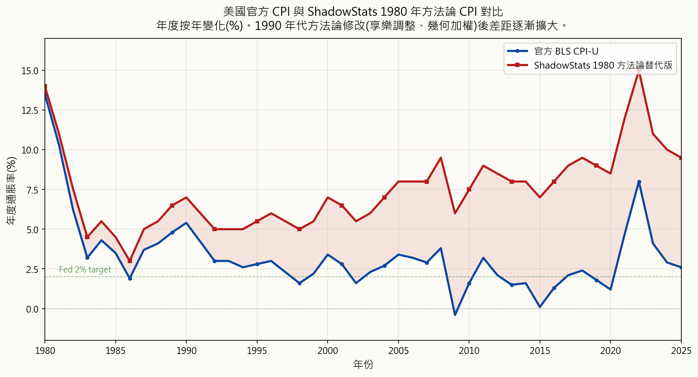
手法二：核心通脹（「剔除食品和能源」）。 美聯儲偏好的通脹指標是核心個人消費支出（PCE）——個人消費支出指數，以食品和能源波動性大為由剔除了這兩個類別。且不論食品和能源可以說是家庭支付的最重要的價格，剔除它們在結構上的效果與享樂調整的把戲相同：公布的數字低於人們實際的體驗。PCE本身因籃子權重差異，平均比CPI低約0.3個百分點。核心PCE在此基礎上再加一層過濾。美聯儲以此指標制定貨幣政策。
手法三：替代效應（「如果牛肉變貴了，你就會改買雞肉」）。 當一籃子商品中某項商品相對變得更貴，現代CPI就假設家庭會轉向更便宜的替代品——並降低該昂貴商品在籃子中的比重。從數學上看：你越來越買不起的東西，在通脹指標中的比重越來越低，原因恰恰是它變得更貴了。這被稱為幾何加權，於1990年代末引入。1980年前的方法使用算術加權，不會因為你被高價擠出而對你造成這種懲罰。
這對你在現實金錢上意味著什麼：
- 你的養老金生活費用增加、你的社會保障加薪、你的稅率級距調整——全都與人為偏低的官方CPI掛鈎。如果政府每年低估通脹2%，持續20年，這對任何收入與CPI掛鈎的人而言，都意味著累計約49%的實際削減。
- 通脹保值債券（TIPS）的收益率與同樣被低估的CPI掛鈎。它們宣稱的「實際回報」只有在你信任那個平減指數的前提下才是真實的。
- 薪酬談判以官方CPI為錨。在整個職業生涯中，公布的CPI與實際體驗到的通脹之間的差距，會複利成為一筆非常可觀的隱形減薪。
- 美聯儲的利率決策基於核心PCE。當美聯儲說「通脹達標」時，他們的意思是那個被修改過的指標達標了。在真實通脹率6%的環境下，你的儲蓄帳戶只付給你0.5%，這是那個計量差距造成的結果，而非偶然。
2.2 通脹從何而來：印鈔
教科書對通脹的解釋——「過多的貨幣追逐過少的商品」——在技術上是正確的，但沒有告訴你為什麼貨幣會過多。誠實的答案是：中央銀行製造了它，政府花掉了它。 現代通脹，歸根究柢，是一種貨幣現象。
看看過去四分之一個世紀主要貨幣的廣義貨幣供應量（M2），以2000年為基準指數化，全部設為100：
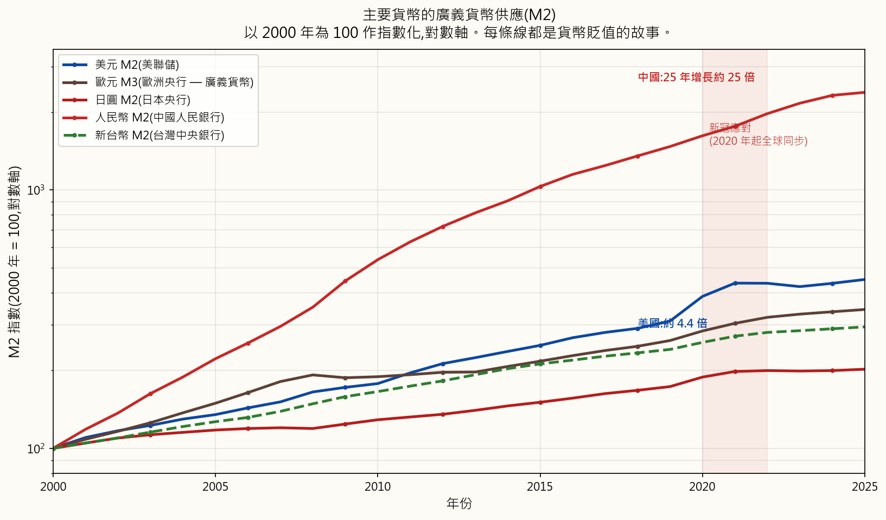
每一種主要貨幣都已在這段時期貶值。2020年後的垂直升幅在每一條線上都清晰可見——新冠疫情時期的應對措施是一次同步的全球貨幣擴張，是現代史上和平時期最大規模的一次。請注意，圖表使用的是M2（流通貨幣＋活期存款＋儲蓄存款＋小額定期存款＋零售貨幣市場基金），而非M1。M1低估了問題的嚴重性；M2是「實際在經濟中運作的貨幣」更接近的替代指標。
故事的另一半是政府債務。當政府出現財政赤字（支出超過稅收）時，它就發行債券。當中央銀行用新創的儲備金購買這些債券時——這正是2008年以來量化寬鬆的操作——那就是貨幣化債務：今天花錢，明天用印出來的錢償還。美國國家債務和美國M2幾乎亦步亦趨地同步增長，因為它們是同一貨幣行為的兩個面向：
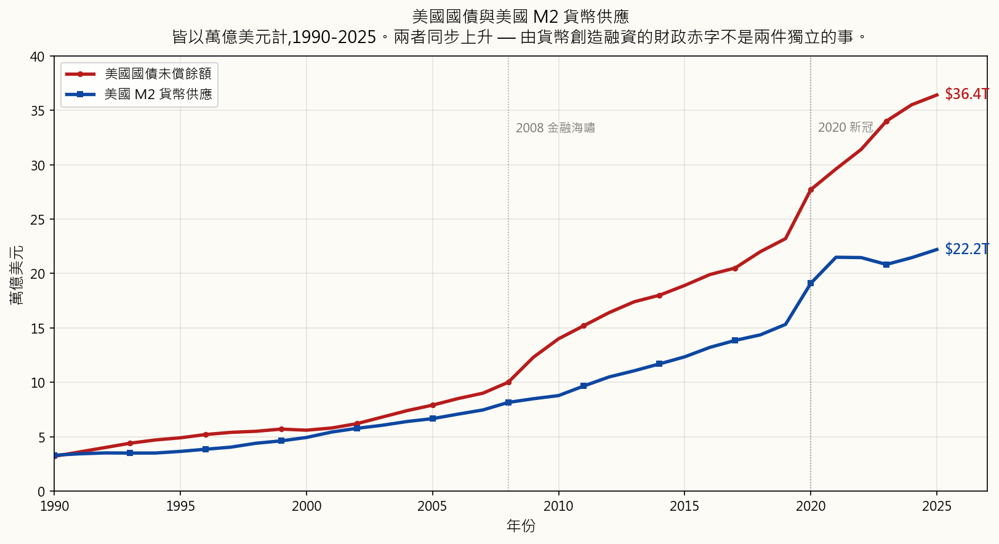
這就是當前的時代背景，它對你可以投資的標的有直接影響：
複利這一真實的數學概念本身是真實且重要的——利滾利確實呈指數增長，代數計算是正確的。不真實的，是教科書中那條平滑、無風險的8%直線。這條線所使用的計量貨幣，正在以每年7至15%的速度被創造出來。不存在教科書所引用水平的無風險實際回報。真正的問題是：哪些資產能夠跟上印鈔機的速度，在什麼價格下值得持有？
2.3 實際回報與名義回報：唯一誠實的衡量標準
名義回報是標題數字——「標普500去年回報26%。」實際回報是名義回報減去通脹——即你在購買力上真正獲得的收益。
一個簡便的近似公式：
$$ r_{\text{實際}} \approx r_{\text{名義}} - i $$
精確的關係（費雪方程式）是：
$$ r_{\text{實際}} = \frac{1 + r_{\text{名義}}}{1 + i} - 1 $$
在低通脹情況下，近似值對心算已足夠準確；在高通脹或高回報的情況下，精確公式就更為重要。在名義回報26%、通脹7%的情況下，近似值給出19%；精確答案是17.8%。在正常通脹水平下差距不大，但兩者都升高時差距會擴大。
誠實的表格——按資產類別劃分的美國歷史實際回報（扣除通脹後）：
| 資產類別 | 名義（長期平均） | 實際（扣除通脹後） | 跑贏通脹？ |
|---|---|---|---|
| 美國股票（標普500，股息再投資） | 約10% | 約7% | 是，可靠地 |
| 黃金 | 約7% | 約3–4% | 在長期（1971年後）是 |
| 房地產（廣義，含租金） | 約9% | 約3–4% | 在長期是 |
| 美國債券（10年期國債，長期平均） | 約5% | 約1–2% | 勉強——且在2010至2020年代並非如此 |
| 美國國債（現金等價物） | 約3.5% | 約0% | 2008年後，否 |
| 儲蓄帳戶 | 約1–2% | 約負2至負5% | 否 |
| 現金（放在家裡） | 0% | 約負3至負7% | 否 |
表頭寫著「長期平均」，而「長期」在這張表中承擔了大量的工作。債券在完整歷史上平均確實錄得正實際回報，但這個平均數被1982年至2020年的去通脹債券牛市所拉高——長達40年的利率下降時期，將債券變成了一部總回報引擎。在2020年代，10年期國債已錄得嚴重的負實際回報；債券牛市已告終結，製造它的時代背景（見§2.2）已然逆轉。
因此，這張表誠實地反映當今時代，就縮減成為一個更短的清單，列出真正可靠地跑贏通脹的東西：
- 股票（廣義而言，包括透過指數基金或直接方式持有的有生產力企業）
- 黃金及其他貨幣金屬
- 有生產力的房地產（有現金流，而非空地）
- 特定商品（在周期的合適位置）
這是本課程其餘部分的基礎紀律。我們所審視的每一類資產、我們所教授的每一種策略，都將以這個唯一的標準來評估。名義回報不過是表演。實際回報才是唯一能夠支付你未來雜貨帳單的東西。
3. 常見誤解
誤解一：「我應該把錢放在儲蓄帳戶裡，那樣比較安全。」
在真實通脹率超過5%的環境下，一個派息1至2%的儲蓄帳戶，是你能持有的負實際回報最激進的倉位之一。它感覺安全，因為名義數字不會下降。但它並不安全——它是一種緩慢、幾乎難以察覺的出血。正是因為其緩慢，才使它危險：「保守理財」的人在意識到遊戲規則對他們不公平之前，已失去了數十年的購買力。
誤解二：「教科書上的8%複利圖表顯示了我投資後會發生的事情。」
它顯示的是如果存在8%實際無風險回報會發生的事情。那不存在。在2008年後的大部分十年間，國債的實際回報約為0%。標普500平均每年約10%名義回報，但路徑是上漲30%的年份和下跌40%的年份，以及毫無起色的整個十年——從來都不是一條平滑的直線。教科書上的圖表被畫成直線，是為了讓複利看起來像數學一樣確定；現實中，它是一條充滿回撤的嘈雜攀升之路，需要你有心理上在回撤中堅持買入的能力。那才是真正困難的部分，而教科書的圖表將其隱藏了。
誤解三：「債券是我投資組合中安全、對沖通脹的部分。」
債券確曾是1982至2020年去通脹時代的抗通脹工具——那是歷史上最長的債券牛市。那個時代已告終結。隨著中央銀行受制於政府債務利息的計算邏輯（§2.2），高評級債券的實際收益率在2010年代和2020年代的大部分時間已是負數。「債券等於安全」這條規則，是對一個已不再適用的時代的近因偏誤。今天的債券是一個存續期賭注，而非抗通脹工具。
誤解四：「新聞上的CPI數字就是通脹的真實數字。」
CPI是一種計量選擇，而非客觀事實。它採用享樂調整（一部功能更多的新iPhone被視為價格下降）、替代加權（你越來越買不起的東西在籃子中佔比越來越低，理由是你已少買了它們），並在美聯儲偏好的核心PCE指標中剔除了食品和能源。三種不同的方法論選擇，全都將公布的數字推低至低於家庭實際體驗到的通脹。請以實際體驗到的通脹率而非政治性的官方數字，作為你投資回報的門檻。
誤解五：「72法則告訴我我的錢需要多久才能翻倍。」
它告訴你的是，一個恒定的回報率需要多長時間才能讓資金翻倍。恒定的回報率只存在於教科書的例題中，現實中並不存在。真實的回報是有波動性、有回撤、有時代更替的序列；「以8%計算九年翻倍」這個估算，對序列中間夾著一個2008年的情況毫無指導意義。這條法則是一道有趣的心算技巧，只在教科書已為你構建的那個虛構世界裡成立。
誤解六：「上漲10%後再下跌10%，就回到原位。」
這在數學上是錯誤的。$100 + 10% = $110。然後$110 − 10% = $99。你虧損了1%。損失比等量的盈利帶來的傷害更大，因為盈利的百分比是建立在虧損後一個更小的基數上的。50%的虧損需要100%的盈利才能回本。90%的虧損需要900%的盈利才能回本。
| 虧損 | 所需的回本漲幅 |
|---|---|
| −10% | +11.1% |
| −20% | +25.0% |
| −30% | +42.9% |
| −50% | +100.0% |
| −75% | +300.0% |
| −90% | +900.0% |
從數學上看，在虧損幅度為 \(L\) 之後，所需的回本漲幅為
$$ G = \frac{L}{1 - L} $$
當 \(L\) 變大時，這個值的增速遠超 \(L\) 本身。這就是為什麼管理下行風險比最大化上行回報更為重要，以及為何那條從未出現50%最大回撤的「安全」國債路徑，在心理層面並不嚴格遜於股票路徑——即使股票路徑在長期實際回報上勝出。
誤解七：「投資就是賭博。」
賭博的預期回報是負的——莊家必勝，從數學預期上看你是輸家。投資於有生產力的資產（代表對真實企業真實現金流的所有權的股票），則有歷史上正的預期回報——你因提供資本和承擔風險而獲得報酬。短期炒賣個別股票可能類似賭博。長期分散持有有生產力的股票，在本質上截然不同，數學也印證了這一點。
誤解八：「我需要大量資金才能開始投資。」
不需要。大多數經紀商提供零門檻和碎股買賣。真正的限制條件很少是第一筆存款的規模；而是在不可避免的回撤中堅持繼續入金的紀律。一個從25歲開始每月投入$100買入廣義指數基金的人——在未來四十年所有30%的熊市中持續這樣做——最終的結果，將遠遠超過那些在25歲時一次性投入$50,000、在第一次回撤時恐慌離場、再也不重新入市的人。行為比本金更重要。
4. 問答
問題一：如果教科書上的8%圖表是童話故事，我實際上應該期望什麼樣的回報？
答：兩個誠實的答案，都有用：
- 對於廣義美國股票（標普500，股息再投資），長期名義平均約為10%，長期實際平均（扣除官方CPI後）約為7%。 如果你認同影子CPI的批評，實際數字再調低1至2個百分點，大約是5至6%實際回報。
- 路徑並不平滑。 在任何給定的年份，市場可能回報+30%或-30%。10%的平均值只在長期（20年以上）才會顯現，即使是那些長期也包含了多年的持平或負回報（2000年代的「失落的十年」在實際回報上收盤低於起點）。按平均值規劃；按波動性調配倉位。
問題二：你為什麼說72法則沒用？它在數學上是正確的。
答：對於恒定的回報率，數學是正確的。問題在於，恒定的回報率並不存在——那是教科書的抽象概念。在現實世界中，回報是有順序、有波動性、有時代更替的序列，而順序至關重要：序列早期一個-40%的年份造成的損害，遠大於序列後期一個-40%的年份，因為早期有更多的資本可以損失。72法則對順序風險無話可說，而那才是你實際承擔的風險。作為對某個引用平均利率的健全性檢驗，這條法則還可以接受。作為規劃工具，它具有誤導性。
問題三：為什麼我不能信任官方CPI？
答：三種方法論選擇，全部逐步引入，全部將公布的數字向下推：
- 享樂調整（一款功能更多的新產品被視為價格下降，即使你仍然支付全額標價）；
- 替代效應/幾何加權（你越來越買不起的商品在籃子中佔比越來越低，理由是你少買了它們）；
- 核心通脹（在美聯儲偏好的PCE指標中剔除食品和能源——即對家庭衝擊最大的那些物價，從與政策相關的數字中被移除了）。
問題四：如果債券不再跑贏通脹，為何經紀商仍然推薦它們？
答：兩個原因。首先，這種推薦源於1982至2020年的時代背景——在那個時代，債券確實大幅跑贏通脹——經紀商培訓、財務規劃模型，以及整個六四分股債的投資組合正統理論，都是在那個時代建立的，尚未完全更新。其次，債券仍然擅長一件事：降低投資組合的短期波動性。它們是波動性對沖工具，而非通脹對沖工具。如果你對回撤的心理承受能力是限制你投資行為的關鍵因素，債券可能仍有其一席之地——只是不要在當前時代誤將其當作通脹對沖工具。
問題五：「印鈔」與政府財政赤字支出有什麼分別？
答：兩者現在幾乎是同一回事。當政府出現財政赤字時，它發行債券。歷史上，這些債券是賣給私人投資者的——養老基金、外國中央銀行、儲蓄者——他們用現有的貨幣為支出提供資金。那不是印鈔。然而，自2008年以來，中央銀行（美聯儲、歐洲央行、日本銀行）開始定期用新創造的儲備金大量購買新發行的政府債券。那確實是印鈔——赤字正由新印的貨幣而非現有的儲蓄來融資。這一區別至關重要：由債券融資的赤字不會直接稀釋貨幣；由中央銀行融資的赤字則會。而現代財政赤字絕大多數屬於後者。
問題六：通脹對所有人的影響是否相同？
答：不是。官方CPI是一個代表性籃子的全國平均值；你的個人通脹率取決於你實際的消費結構。三個群體感受到的通脹比官方數字所顯示的更嚴峻：
- 租客（大多數時期的樓價通脹高於CPI）；
- 退休人士和長期患病人士（醫療和處方藥的通脹遠高於CPI）；
- 有子女在私立學校或美國大學就讀的家庭（教育通脹在過去二十年大約是CPI的兩倍）。
問題七：我應該先還清債務再投資嗎？
答：比較債務的稅後利率與預期投資實際回報。信用卡債務年利率超過20%，是財務緊急狀況——還清它等於獲得有保證的20%回報，優於任何股票投資。在6%真實通脹環境下，年利率4至5%的按揭是負實際利率——通脹正在幫你還債，積極提前還款並不划算。通行的法則是：先還清所有年利率超過約7%的債務，然後再投資。（另外請確認債務是否可抵稅——在某些司法管轄區，按揭利息可以抵稅，這會進一步降低實際利率。）
問題八：複利能反過來對我不利嗎？
答：可以，而且這是人們最容易忽視的、遠離高利率債務的理由。一筆$5,000的信用卡欠款，年利率24%，如果不還，五年後增長至$14,615。複利不在乎它運作的方向；在長期股票持有中積累財富的同樣數學力量，也在未還清的債務中摧毀財富。消除高息債務是大多數人可獲得的最高回報「投資」，而且是無風險的。
問題九：如果只有股票能可靠地跑贏通脹，為何還要持有其他任何東西？
答：因為路徑與目的地同樣重要。一個純粹100%股票的投資組合，在某個十年裡必然會給你帶來超過50%的最大回撤。如果你在底部賣出——大多數人都會這樣做，因為他們夜不能寐——你就失去了本來能讓你理直氣壯持有股票的那個長期實際回報優勢。對黃金、現金，以及（對某些投資者，在某些時代下）債券的一定配置，是行為保險：它減少了你必須親身經歷的回撤幅度，讓你在最關鍵的時刻能夠繼續持有股票部分。資產配置是我們稍後在本課程中要花幾週時間深入研究的主題。就目前而言，核心要點是：股票是回報引擎；其他一切都是平滑波動的工具。
問題十：黃金不派任何收益。它怎麼能跑贏通脹？
答：黃金跑贏通脹不是靠收益率——它沒有。黃金是靠在正在貶值的貨幣中的價格升值來跑贏通脹的。自美國1971年放棄金本位制以來，黃金從大約每盎司$35升至今天的$2,500以上——名義上大約上漲了70倍，或以實際（通脹調整後）價值計算，在55年間大約上漲了4至5倍。黃金實際上是做多貨幣貶值的長倉：美聯儲每創造一美元新貨幣，最終都需要一個去處，而歷史上相當一部分流向了貨幣金屬。我們將在本課程中多次回到黃金和價值儲存資產這個話題。
第一週：為何要投資？打敗通膨才是核心目標
1. 為何這件事很重要
翻開任何一本入門財務教科書，你都會看到同一張圖：一條平滑曲線，標注著「$10,000以每年8%複利成長」。三十年後，你成了百萬富翁。四十年後，你財富豐厚。複利在默默運作。
那張圖是一個美麗的謊言。 在2026年，你要從哪裡找到穩定、無風險的每年8%報酬？根本找不到。國庫券在2008年後的大部分十年裡，殖利率約莫只有半個百分點。投資等級債券在2022年慘遭重創。就連標普500指數，雖然平均每年約有10%的報酬，但那是透過上漲30%的年份與下跌40%的年份、以及毫無起色的整個十年所堆疊出來的結果——從來不是一條平滑的曲線。教科書上那條筆直的曲線，是為了把投資包裝成一道有保證答案的數學題。事實並非如此。沒有無風險的8%。從來就沒有。
「72法則」也是一樣——「在8%報酬率下，你的錢每九年翻倍」。毫無用處。穩定的8%根本不存在，而一旦你用實際的逐年報酬序列取代那個固定數字，這個法則就瓦解了。這個「法則」不過是個把戲，只在教科書已經為你畫好的那條虛構成長路徑上才管用。
那麼，為何還要投資？因為不投資的代價更慘。你已經身陷一場自己沒有選擇的賭局——賭你銀行帳戶裡的現金能維持購買力。它辦不到。通膨是每一位投資人都必須對抗、才能勉強原地踏步的引力。問題從來不是「我該不該承擔風險？」——無論你採取什麼行動，你都已經在承擔通膨風險了。真正的問題是：哪種風險會給你報酬？
這門課程的目的，就是誠實地回答這個問題。簡短的答案如下，本課程其餘部分將會深入展開：
- 你必須打敗通膨，否則即便帳戶上的數字在成長，你的實際購買力卻在縮水。
- 股票（以及黃金、能產生現金流的不動產等少數實質資產）是唯一經得起考驗的選擇。
- 債券曾經能夠打敗通膨，在1982年至2020年前後的反通膨時代確實如此。但現在不行了——這背後有貨幣超發與政府壓低利率、為自身債務減輕負擔的故事。我們將在§2.3詳細討論。
- 甲 把錢留在現金。沒有銀行，沒有利息。純粹的貨幣，放在抽屜裡。
- 乙 把錢存進短期美國國庫券，這是最安全的計息工具。
- 丙 把錢投入標普500指數，並將所有股利再投入。
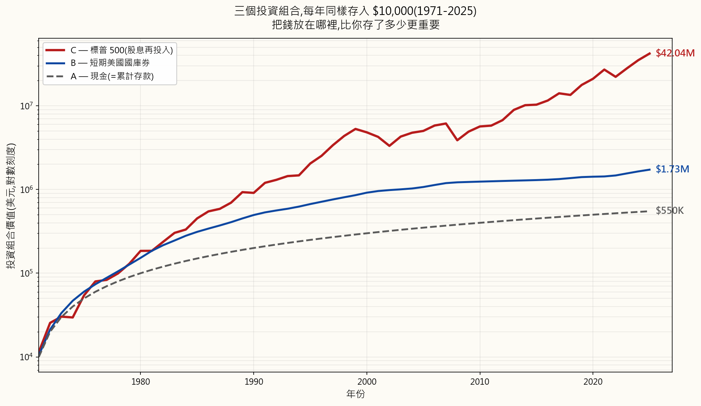
55年後，每個人存入的自有資金都是相同的 $550,000。但最終的餘額根本不在同一個量級：
- 丙——標普500：名目金額$42,041,000，以1971年購買力計算約為$5,079,000——實質購買力確實大幅增加。
- 乙——國庫券：名目金額$1,725,000，以1971年購買力計算約為$208,000——扣除通膨後幾乎持平。而這還包含了1980年代國庫券支付雙位數殖利率的年份。剔除那些年份，情況會糟糕得多——而那正是我們現在所處的環境。
- 甲——現金：名目金額$550,000，以1971年購買力計算約為$66,000——勤奮儲蓄55年，最終的實質購買力，大約只有六年半存款的價值。現金不是沒有成長；而是在甲老老實實存錢的這些年間，通膨主動侵蝕了它的購買力。
2. 你需要了解的事
2.1 通膨：你在新聞上看到的數字，不是你實際支付的數字
你在電視上看到的那個標題數字——「本月CPI為2.6%」——是美國勞工統計局公布的消費者物價指數（CPI）。聯準會的目標是每年約2%。退休金生活費調整、社會安全福利增幅、稅率級距調整，以及與通膨掛鉤的債券（TIPS），全都以此為基準。
問題在於：CPI的計算方法已被多次修改，而每次修改都系統性地壓低了印出來的數字。 有三個具體的手法值得你了解。
手法一：特性調整（「新款iPhone功能更多」）。 勞工統計局的邏輯是：如果新款iPhone的售價和去年一樣，但相機畫質更好，那這就是通縮——你花了一樣的錢，卻得到了更好的產品。汽車（更多安全配備）、冰箱（更大容量）、筆電（更快的CPU）皆同。勞工統計局因此在CPI中將iPhone的價格向下調整，以反映這些「額外價值」。這被稱為特性調整（hedonic adjustment），自1990年代末期開始實施。
問題在於，消費者買的不是iPhone的功能。他們買的是一支iPhone。 一輛車就是一輛車，無論它有沒有車道維持輔助系統。一台新筆電就是一台新筆電，無論晶片快了30%還是不快。你還是得買那個東西，而你實際掏出去的，就是架上的標籤價——不是什麼假想的「功能調整後的」更低價格。透過把品質改善視為價格下降，特性調整系統性地使CPI報告值低於你在收銀台實際感受的價格。鮑斯金委員會1996年的估算是，特性調整與替代效果加總，每年使CPI報告值降低0.5至1.0個百分點——年年如此，複利累積。
目前美國沒有廣泛公布的、單獨剔除特性調整的CPI數列。最接近的替代方案是約翰．威廉斯（John Williams）的 ShadowStats「以1980年為基準的CPI替代指數」——試圖以1980年前的勞工統計局方法重建CPI，而那套方法將特性調整與幾項後來的修改打包在一起。ShadowStats通常比官方數字高出5至7個百分點。主流經濟學家批評這個數列，認為它基本上只是加了一個近似固定的偏移量，而非從原始數據重新計算整個籃子，這樣的批評有其道理。但即便採取保守的解讀——ShadowStats高估了幾個百分點——方向性的訊息仍然成立：你在新聞上看到的數字，明顯低於家庭實際感受的通膨，而勞工統計局對此心知肚明已逾30年。
手法二：核心通膨（「排除食品和能源」）。 聯準會偏好的通膨衡量指標是核心PCE——個人消費支出（PCE），以食品和能源波動太大為由，將這兩類排除在外。撇開食品和能源可說是家庭最重要的支出這一點，將它們剔除的結構性效果與特性調整如出一轍：印出的數字低於人們實際感受。PCE本身因籃子權重差異，平均已比CPI低約0.3個百分點。核心PCE再疊加一層在上面。聯準會就用這個數字制定貨幣政策。
手法三：替代效果（「如果牛肉貴了，你就去買雞肉」）。 當籃子中的某個品項相對變貴，現代CPI便假設家庭會轉向更便宜的替代品——並降低那個昂貴品項在籃子中的權重。用數學語言說：恰恰因為那些東西變貴了，你越來越買不起，它們在通膨衡量中的比重就越低。這稱為幾何加權，於1990年代末期引入。1980年以前的方法使用算術權重，不會因為你買不起某樣東西就這樣「懲罰」你。
這對你的真實金錢有何意義：
- 你的退休金生活費調整、你的社會安全福利加幅、你的稅率級距調整——全部與人為壓低的官方CPI掛鉤。如果政府每年少算2%的通膨，持續20年，對於任何收入與CPI連動的人而言，累計相當於49%的實質減薪。
- 抗通膨債券（TIPS）支付的殖利率與同一個被低估的CPI掛鉤。它們標榜的「實質報酬」，只有在你信任那個縮水的平減指數時才算數。
- 薪資談判以官方CPI為錨點。在一個職業生涯的尺度上，報告通膨與實際感受通膨之間的差距，複利累積成一筆巨大的隱形減薪。
- 聯準會的利率決策以核心PCE為依據。當聯準會說「通膨達標了」，他們指的是那個被操縱的指標達標了。在6%實質通膨的環境裡，給你支付0.5%的儲蓄帳戶，是那個衡量差距的特色，而非缺陷。
2.2 通膨從何而來：超發貨幣
教科書對通膨的解釋——「太多的錢追逐太少的商品」——在技術上是正確的，但對於為何會有太多的錢，毫無解釋。誠實的答案是：中央銀行創造了它，政府花掉了它。 現代通膨，說到底，是一種貨幣現象。
看看過去四分之一個世紀主要貨幣的廣義貨幣供給量（M2），以2000年為基準點設為100後的走勢：
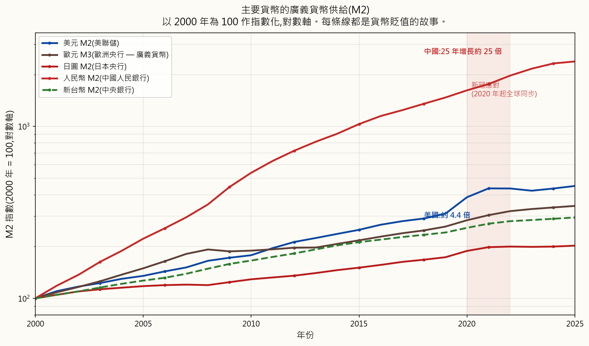
每一種主要貨幣都在這段期間遭到貶值。2020年後的垂直拉升在每條線上都一目了然——新冠疫情時代的政策應對，是一次同步的全球貨幣擴張，是現代史上和平時期規模最大的一次。注意此圖使用的是M2（流通中的貨幣＋活期存款＋儲蓄存款＋小額定期存款＋零售貨幣市場基金），而非M1。M1低估了真實情況；M2才是「真正在經濟體中流動的貨幣」的較佳代理指標。
故事的另一半是政府債務。當政府出現財政赤字（支出超過稅收），就會發行債券。而當中央銀行用新創造的儲備金購買這些債券——這正是2008年以來量化寬鬆的本質——那就是貨幣化債務：今天的支出，由明天印出來的錢買單。美國國債與美國M2幾乎同步增長，幾乎亦步亦趨，因為它們是同一個貨幣行為的兩個面向：
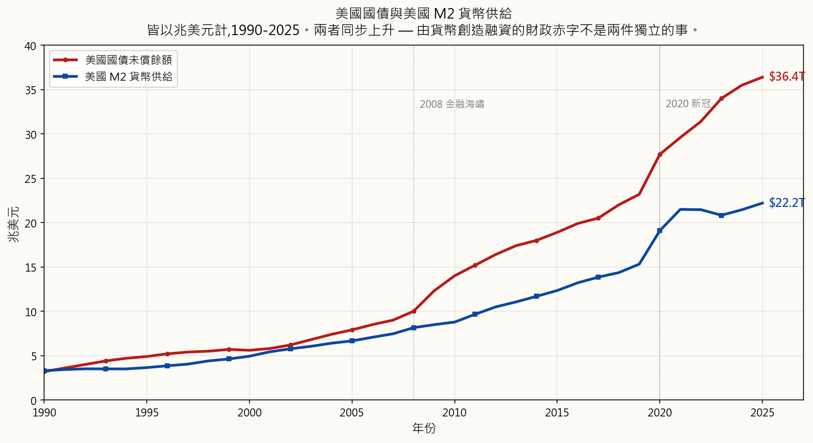
這就是我們所處的時代格局，它對你的投資選擇有直接影響：
複利，作為一個實際的數學概念，是真實且重要的——利滾利確實呈指數級成長，代數計算是正確的。不真實的，是教科書中對平滑、無風險的8%曲線的描繪。那條曲線所依據的貨幣，每年正以7至15%的速度被創造出來。根本不存在教科書所引用那種水準的無風險實質報酬。真正的問題是：哪些資產能跟上印鈔機的腳步，而它們在什麼價格下值得持有？
2.3 實質報酬與名目報酬：唯一誠實的衡量尺度
名目報酬是標題上的數字——「標普500去年上漲26%」。實質報酬是名目報酬減去通膨——你實際獲得的購買力增幅。
一個簡便的近似公式：
$$ r_{\text{實質}} \approx r_{\text{名目}} - i $$
精確的關係式（費雪方程式）是：
$$ r_{\text{實質}} = \frac{1 + r_{\text{名目}}}{1 + i} - 1 $$
在低通膨下，近似值已足夠進行心算；當通膨或報酬率較高時，精確公式就很重要。以26%名目報酬和7%通膨計算，近似值給出19%；精確答案是17.8%。在正常通膨水準下差距不大，但兩者都高時差距會擴大。
誠實的歷史實質報酬表——美國各資產類別，扣除通膨後：
| 資產類別 | 名目報酬（長期平均） | 實質報酬（扣除通膨後） | 能打敗通膨？ |
|---|---|---|---|
| 美股（標普500，股利再投入） | 約10% | 約7% | 能，且具穩定性 |
| 黃金 | 約7% | 約3–4% | 能，在長期時間軸上（1971年後） |
| 不動產（廣義，含租金） | 約9% | 約3–4% | 能，在長期時間軸上 |
| 美國債券（10年期國庫券，長期平均） | 約5% | 約1–2% | 僅勉強——2010年代與2020年代並非如此 |
| 美國國庫券（現金等價物） | 約3.5% | 約0% | 不能，2008年後 |
| 儲蓄帳戶 | 約1–2% | 約−2至−5% | 不能 |
| 現金（放在床墊下） | 0% | 約−3至−7% | 不能 |
表格標題說「長期平均」，而「長期」在這裡做了很多苦工。債券平均而言在整個歷史上確實有正實質報酬，但這個平均值受到1982年至2020年反通膨多頭市場的拉抬——那是歷史上持續時間最長的債券大多頭行情，長達40年的降息週期將債券變成了一台總報酬引擎。2020年代，10年期國庫券的實質報酬深度為負；債券多頭市場已結束，製造它的那個格局（見§2.2）已然逆轉。
因此，就當前格局誠實地解讀這張表，能可靠打敗通膨的清單大幅縮短：
- 股票（廣義，包括透過指數股票型基金或直接持有的有生產力企業）
- 黃金和其他貨幣金屬
- 有生產力的不動產（有現金流，而非空地）
- 特定原物料（在週期的適當時點）
這是本課程其餘部分的基礎紀律。我們審視的每一個資產類別、教授的每一種策略，都會以這個唯一的標準來評估。名目報酬是表演。實質報酬才是唯一能支付你未來帳單的東西。
3. 常見的錯誤認知
錯誤認知一：「我應該把錢放在儲蓄帳戶裡，這樣才安全。」
在5%以上實質通膨的環境裡，一個支付1至2%利率的儲蓄帳戶，是你能持有的負實質報酬最激進的部位之一。它感覺安全，因為名目數字不會下降。但它並不安全——它是一種緩慢、幾乎察覺不到的出血。正是這種緩慢，讓它格外危險：那些「求穩妥」的人，在意識到遊戲規則對自己不利之前，早已流失了數十年的購買力。
錯誤認知二：「教科書上的8%複利圖表展示了我投資後會發生的事。」
它展示的是，假如8%無風險實質報酬存在，會發生什麼事。它們不存在。在2008年後的大部分十年裡，國庫券的實質報酬約為零。標普500平均每年約有10%的名目報酬，但那是一條由30%漲幅的年份、40%跌幅的年份以及毫無起色的整個十年所交織而成的路徑——從來不是一條平滑的線。教科書上把圖畫成一條直線，是為了讓複利看起來像數學；現實中，它是一段充滿雜音與最大回撤的攀升，需要投資人在市場下跌期間在心理上仍能持續買入。這才是真正困難的地方，而教科書的圖表把它藏起來了。
錯誤認知三：「債券是投資組合中安全、能對沖通膨的那一部分。」
在1982年至2020年的反通膨格局中，債券曾是通膨避險工具——那是歷史上持續時間最長的債券多頭市場。那個格局已結束。在中央銀行受制於政府債務利息數學邏輯的情況下（見§2.2），高等級債券的實質殖利率在大部分的2010年代和2020年代都是負數。「持有債券以求安全」的法則，是對一個已不再適用的格局的近因偏誤。今天的債券是一種存續期間的賭注，而非通膨避險工具。
錯誤認知四：「新聞上的CPI數字，就是通膨的實際水準。」
CPI是一種衡量選擇，而非事實。它使用特性調整（功能更好的新款iPhone被視為價格下降）、替代加權（你越來越買不起的東西，恰恰因此在籃子中的比重下降）以及在聯準會偏好的核心PCE中排除食品和能源——三種方法論選擇，全都把印出的數字壓得低於家庭實際感受的通膨。把你的投資目標報酬率錨定在實際感受到的通膨率上，而非那個政治性的數字。
錯誤認知五：「72法則告訴我需要多久錢才能翻倍。」
它告訴你的是，在固定報酬率下，需要多久讓錢翻倍。固定報酬率只存在於教科書例題之外的虛構世界。實質報酬是帶有波動性、最大回撤和格局轉換的序列；「在8%報酬率下9年翻倍」的估算，對序列中間夾著一個2008年的情況毫無說明。這個法則是一個只在教科書已為你畫好的虛構世界裡才成立的心算把戲。
錯誤認知六：「上漲10%再下跌10%，就回到原點了。」
這在數學上是錯的。$100上漲10%=$110。然後$110下跌10%=$99。你虧損了1%。損失比同等的獲利傷害更大，因為虧損後，獲利的百分比是以更小的基數計算的。虧損50%，需要獲利100%才能回到原點。虧損90%，則需要獲利900%。
| 虧損幅度 | 回本所需的獲利幅度 |
|---|---|
| −10% | +11.1% |
| −20% | +25.0% |
| −30% | +42.9% |
| −50% | +100.0% |
| −75% | +300.0% |
| −90% | +900.0% |
從數學上，在虧損幅度為 \(L\) 之後，回本所需的獲利幅度為
$$ G = \frac{L}{1 - L} $$
一旦 \(L\) 變大，\(G\) 的增速遠快於 \(L\) 本身。這正是為何管控下檔風險比最大化上檔報酬更重要，也是為何那條從不發生50%最大回撤的「安全」國庫券路徑，在心理上並非嚴格劣於股票路徑——即便股票路徑在長期實質報酬上勝出。
錯誤認知七：「投資就是賭博。」
賭博的預期報酬是負的——莊家永遠贏，數學期望值是讓你虧錢。投資有生產力的資產（股票代表對真實企業真實現金流的所有權主張）的歷史預期報酬是正的——你獲得的是提供資本與承擔風險的報酬。對個別股票的短期投機可能類似賭博。長期分散投資於有生產力的股票，在本質上截然不同，而數學數據也反映了這一點。
錯誤認知八：「我需要很多錢才能開始投資。」
不需要。大多數券商提供零最低起始金額和零股投資。真正的限制很少是第一筆存款的大小；而是在不可避免的最大回撤期間仍能持續存入的紀律。一個從25歲起每月投入100美元進入廣泛指數基金的人——並在未來四十年每一次30%的空頭市場中都持續這樣做——最終會遠遠領先於一個25歲時一次存入5萬美元、第一次市場下跌就恐慌賣出、之後再也沒有回來的人。行為決定結果，而非本金大小。
4. 問答
Q1：如果教科書上的8%圖表是謊言，我應該期待什麼樣的報酬？
A：兩個誠實的答案，都很有用：
- 對廣泛的美股（標普500，股利再投入）而言，長期名目平均值約為10%，長期實質平均值（扣除官方CPI後）約為7%。 如果你認同影子CPI的批評，可以再將實質數字往下調整1至2個百分點，落在約5至6%的實質報酬。
- 這條路徑並不平滑。 任何一年，市場可能上漲30%，也可能下跌30%。10%的平均值只在長期（20年以上）才會浮現，即便在那麼長的期間內，也曾出現多年持平或實質為負的階段（2000年代的「失落十年」，在實質意義上，結束時仍低於起點）。以平均值規劃，以波動性調整部位大小。
Q2：你說72法則沒有用，但它在數學上是正確的，不是嗎？
A：這個數學在固定報酬率的前提下是正確的。問題在於，固定報酬率根本不存在——那是教科書上的抽象概念。在現實世界中，報酬是有順序、有波動性、有格局轉換的序列，而順序很重要：一個早年出現的-40%，比晚年出現的-40%傷害大得多，因為早年有更多資本可以虧損。72法則對報酬序列風險毫無解釋，而那才是你實際承擔的風險。作為對某個引用平均報酬率的快速心算，這個法則還可以。但作為規劃工具，它是誤導性的。
Q3：為什麼我不能信任官方CPI？
A：三個方法論選擇，全都是逐步引入的，全都把印出的數字往低壓：
- 特性調整（功能更好的新產品被視為價格下降，即使你仍然付全額標籤價）；
- 替代效果／幾何加權（你越來越買不起的品項，在籃子中的比重越來越低，理由是你會因此少買）；
- 核心通膨（在聯準會偏好的PCE指標中排除食品和能源——也就是把對家庭衝擊最大的價格從政策相關數字中移除）。
Q4：如果債券不再能打敗通膨，為什麼券商仍然推薦它們？
A：兩個原因。第一，這項建議是1982年至2020年那個格局的遺留產物——在那個格局中，債券確實大幅打敗通膨——券商培訓、財務規劃模型以及整個60/40投資組合的正統觀念，都是在那個格局下建立起來的，尚未完全更新。第二，債券仍然有一件事做得很好：降低投資組合的短期波動性。它們是波動性的避險工具，而非通膨的避險工具。如果你對最大回撤的心理承受度是制約你投資行為的關鍵因素，債券或許仍有其一席之地——只是別把它們誤認為在當前格局下能對沖通膨的工具。
Q5：「超發貨幣」與政府財政赤字支出有什麼區別？
A：現在它們幾乎是同一件事。當政府出現財政赤字，就會發行債券。歷史上，這些債券是賣給私人投資人的——退休基金、外國中央銀行、儲蓄者——他們用現有的錢來為支出融資。這不是超發貨幣。然而，自2008年以來，中央銀行（聯準會、歐洲央行、日本銀行）一再以新創造的儲備金大量買入新發行的政府公債。這才是超發貨幣——赤字是用新貨幣而非現有儲蓄來融資的。這個區別很重要：以公債融資的財政赤字不會直接貶值貨幣；以中央銀行融資的財政赤字則會。現代財政赤字幾乎清一色是後者。
Q6：通膨對所有人的衝擊一樣嗎？
A：不一樣。官方CPI是一個代表性籃子的全國平均值；你的個人通膨率取決於你實際的消費支出結構。有三個群體感受到的通膨高於官方數字：
- 租屋族（住房通膨在大多數週期都高於CPI）；
- 退休人士和長期患病者（醫療保健和處方藥通膨遠高於CPI）；
- 有孩子在私立學校或美國大學就讀的家庭（教育通膨近二十年來大約是CPI的兩倍）。
Q7：我應該先還清債務再投資嗎？
A：比較債務的稅後利率與你投資的預期實質報酬。信用卡債務年利率在20%以上是財務緊急狀況——還清它就是保證獲得20%的報酬，優於任何股票投資。在6%實質通膨環境下，4至5%利率的房貸是負實質利率——通膨正在幫你還債，積極提前還清是次優的策略。常用法則：先還清所有利率高於約7%的債務，再投資。（同時確認債務是否可以抵稅——在某些地區，房貸利息可以，這會進一步降低有效利率。）
Q8：複利會反過來傷害我嗎？
A：會，而且這是讓人留在高利率債務泥淖中最被低估的原因。一筆$5,000的信用卡欠款，在24%年利率且未償還的情況下，五年後將成長至$14,615。複利不在乎它往哪個方向運作；透過長期持有股票積累財富的那股數學力量，在未償還的債務上同樣能摧毀財富。消除高利率債務，是大多數人能找到的最高報酬「投資」，而且零風險。
Q9：如果只有股票能可靠打敗通膨，為何還要持有其他資產？
A：因為路徑與目的地同等重要。一個純100%股票的投資組合，在某個十年裡難免會遭遇50%以上的最大回撤。如果你在谷底賣出——大多數人都會，因為夜不成眠——你已經失去了本應讓你持有股票的那個長期實質報酬優勢。配置一些黃金、現金，以及（對某些投資人、在某些格局下的）債券，是一種行為保險：它縮小了你必須承受的最大回撤幅度，讓你在最關鍵的時刻仍能持有股票部位。資產配置是本課程後面幾週的主題。現在，關鍵訊息是：股票是報酬引擎；其他一切是平滑函數。
Q10：黃金沒有任何殖利率，它怎麼能打敗通膨？
A：黃金不是透過殖利率打敗通膨的——它根本沒有。黃金打敗通膨的方式，是以正在貶值的貨幣計算的價格升值。自美國在1971年放棄金本位以來，黃金已從每盎司約35美元漲至今日的2,500美元以上——55年來名目上約漲了70倍，或以實質（通膨調整後）計算約漲了4至5倍。黃金實際上是一種做多貨幣貶值的部位：聯準會每創造一美元的新貨幣，最終都要找個去處，而歷史上有相當一部分流向了貨幣金屬。我們將在本課程中多次回到黃金和價值儲存資產的主題。
第一周：为什么要投资？跑赢通胀才是核心命题
1. 为什么这很重要
打开任何一本入门金融教材，你都会看到同一张图表：一条光滑的曲线，标注着"以每年8%的收益率投入10,000美元"。三十年后，你是百万富翁。四十年后，你家财万贯。复利在默默发挥作用。
那张图表是一个童话。 在2026年，你从哪里能找到稳定、无风险的每年8%收益？根本找不到。在2008年后的大部分时间里，国债短期券的收益率大约只有0.5%。投资级公司债在2022年遭受了重创。就连标普500指数——长期平均收益率约为10%——也是通过上涨30%的年份和下跌40%的年份，以及毫无起色的整个十年，才实现这个数字的，从来不是一条平滑的曲线。教材里那条直线图，是为了把投资包装成一道有保证答案的数学题而存在的。它不是。没有无风险的8%。从来就没有过。
72法则同样如此——"以8%的收益率，你的资金每九年翻一倍。"毫无用处。稳定的8%并不存在，而一旦你用真实的逐年收益序列替换那个常数，法则便会失效。这个"法则"不过是一个魔术把戏，只在教材已经为你画好的那条虚构增长曲线上才管用。
那么，为什么还要投资？因为不投资更糟糕。你已经身处一场自己没有选择的赌局之中——这场赌局押注的是你银行账户里的现金能够保持其购买力。它不能。通胀是每一位投资者都必须对抗才能原地踏步的引力。问题从来不是"我该不该承担风险？"——无论你是否行动，你都已经在承担通胀风险。真正的问题是：哪种风险会为你的承担而给予回报？
本课程的使命，就是诚实地回答这个问题。简短的答案如下，本节课的其余部分将对此展开阐述：
- 你必须跑赢通胀，否则即便账户里的数字在增长，你的实际财富也在缩水。
- 股票（以及黄金、可生产性房地产等少数实物资产）是唯一被证明能够可靠做到这一点的资产。
- 债券曾经能够跑赢通胀，那是在1982年至大约2020年的反通胀周期里。如今它们不再能做到了——背后是货币超发以及政府压低利率以维持自身债务可持续性的故事。我们将在§2.3回到这个话题。
- A君将钱留作现金。没有银行，没有利息。纯粹的货币，放在抽屉里。
- B君将钱存入美国短期国债，这是最安全的计息工具。
- C君将钱投入标普500指数，股息全部再投资。
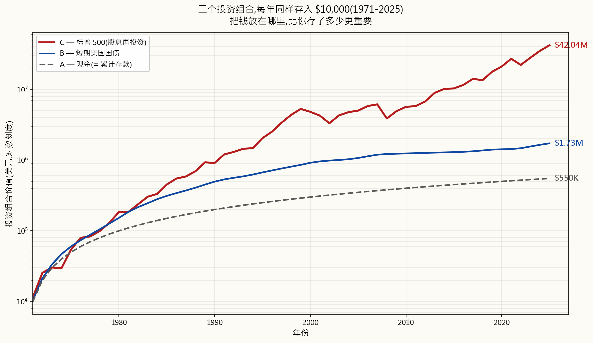
经过55年，每个人存入的自有资金都是相同的55万美元。但最终余额根本不在同一个量级：
- C君——标普500：名义值4,204万美元，以1971年美元计约为507.9万美元——实际购买力显著增长。
- B君——国债短期券：名义值172.5万美元，以1971年美元计约为20.8万美元——扣除通胀后勉强为正。而这还包括了国债短期券年化收益达两位数的1980年代。剔除那些年份，情况要糟糕得多，而那正是我们当下所处的环境。
- A君——现金：名义值55万美元，以1971年美元计约为6.6万美元——勤勤恳恳储蓄55年，最终获得的实际购买力，相当于约六年半的存款。现金不是没有增长；而是在A君兢兢业业的同时，通胀主动蚕食了它。
2. 你需要知道的事
2.1 通胀：你看到的数字不是你实际支付的数字
你在电视上看到的那个数字——"本月CPI为2.6%"——是美国劳工统计局发布的消费者价格指数（CPI）。美联储的目标是每年约2%。养老金生活成本调整、社会保障增幅、税级调整，以及通胀挂钩债券（TIPS），全都与之挂钩。
问题在这里。CPI的编制方法已被多次修改，而这些修改无一例外地压低了公布的数字。 有三个具体的把戏值得了解。
把戏一：质量调整（"新iPhone功能更多了"）。 美国劳工统计局认为，如果新款iPhone售价与去年相同，但摄像头更好，那就相当于通缩——你花同样的钱买到了更多。汽车（更多安全配置）、冰箱（更大容量）、笔记本电脑（更快的CPU）同理。美国劳工统计局在CPI中向下调整价格，以反映"额外价值"。这就是质量调整，自上世纪90年代末起开始应用。
问题在于，消费者不是在买iPhone的功能，他们是在买一部iPhone。 一辆车就是一辆车，不管它有没有车道保持辅助。一台新笔记本就是一台新笔记本，不管芯片快了30%还是没有。你仍然需要一件那样的东西，而你实际掏出的，是货架上的标价——而不是什么被"功能折算"过的虚构低价。通过将质量提升视作价格下降，质量调整系统性地使公布的CPI低于你在收银台实际经历的价格。博斯金委员会1996年的自身估算是，质量调整和替代效应合计使公布的CPI每年降低0.5至1.0个百分点——年年如此，不断复利。
目前没有被广泛发布的美国CPI数据序列单独剔除了质量调整。最接近的民间替代选项是约翰·威廉姆斯的ShadowStats"基于1980年方法论的CPI替代序列"——它尝试使用美国劳工统计局1980年前的方法论重建CPI，而那套方法论将质量调整与其他几项后来的变化打包在一起。ShadowStats的读数通常比官方数字高5至7个百分点。主流经济学家批评该序列本质上只是叠加了一个接近固定的偏差量，而非从原始数据中完整重算篮子，这一批评是有道理的。但即便采用保守的解读——即ShadowStats高估了几个点——方向上的信息依然成立：现实生活中的通胀明显高于新闻头条数字，美国劳工统计局对此心知肚明已有30年。
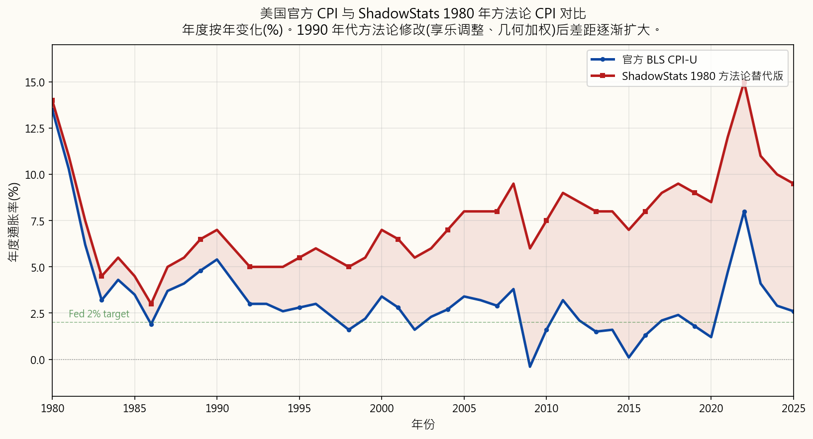
把戏二：核心通胀（"忽略食品和能源"）。 美联储偏好的通胀指标是核心PCE——个人消费支出，剔除食品和能源，理由是这两个类别"波动性较大"。且不说食品和能源可以说是家庭最重要的支出项目，剔除它们的结构性效果与质量调整如出一辙：公布的数字低于人们的实际感受。PCE本身由于篮子权重差异，平均比CPI低约0.3个百分点。核心PCE在此之上再加一层。美联储依据这一指标制定货币政策。
把戏三：替代效应（"如果牛肉贵了，你会买鸡肉"）。 当篮子中某项商品相对价格上涨时，现代CPI假设家庭会转向更便宜的替代品——并降低该贵价商品在篮子中的权重。从数学上看：你越来越买不起的东西，在通胀指标中的权重越来越小，恰恰是因为它变贵了。这就是几何权重，于上世纪90年代末引入。1980年前的方法论采用算术权重，不会因为你被价格拒之门外而对你施以这种惩罚。
这对你的实际财富意味着什么：
- 你的养老金生活成本调整、社会保障涨幅、税级调整——全都与人为压低的官方CPI挂钩。如果政府连续20年低估2%的通胀，这相当于对所有收入与CPI挂钩的人实施了累计约49%的实际削减。
- 通胀保护债券（TIPS）支付与同样被低估的CPI挂钩的收益率。它们标榜的"实际收益率"，只有在你信任该平减指数的情况下才是真实的。
- 工资谈判以官方CPI为锚定参考。在一段职业生涯中，公布通胀与实际感受通胀之间的差距，会复利叠加成一笔巨大的隐形减薪。
- 美联储的利率决策基于核心PCE。当美联储宣布"通胀已达目标"，他们指的是经过操纵的指标已达目标。在真实通胀达6%的世界里，储蓄账户只给你0.5%，这是那个计量差距造成的必然结果，而非偶然。
2.2 通胀从何而来：货币超发
教材对通胀的解释——"过多的货币追逐过少的商品"——在技术上是正确的，但没有告诉你为什么会有那么多货币。诚实的答案是：央行创造了货币，政府花掉了它。 现代通胀，说到底，是一种货币现象。
看看过去四分之一世纪里主要货币的广义货币供应量（M2），以2000年为基准（100）进行指数化：
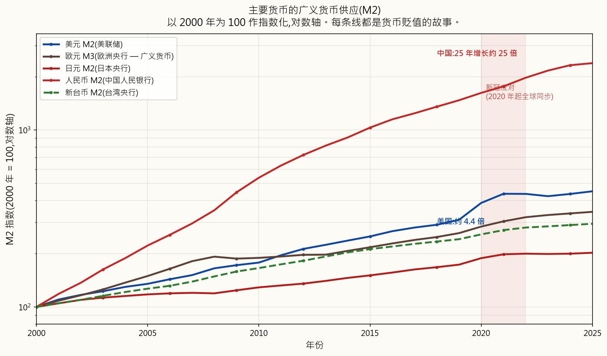
每一种主要货币都已贬值。2020年后的垂直攀升在每条线上都清晰可辨——新冠疫情时代的应对措施是一次同步的全球货币扩张，是现代史上除战时以外规模最大的一次。请注意，图表使用的是M2（流通中的货币+活期存款+储蓄存款+小额定期存款+零售货币市场基金），而非M1。M1低估了这一图景；M2是"真正在经济中发挥作用的货币"更接近的代理指标。
故事的另一半是政府债务。当政府运行赤字（支出超过税收），它发行债券。当央行用新创造的准备金购买这些债券——这正是2008年以来量化宽松的本质——那就是债务货币化：今天的支出，用明天印出的钞票来偿还。美国国债与美国M2几乎同步增长，如影随形，因为它们是同一货币行为的两面：
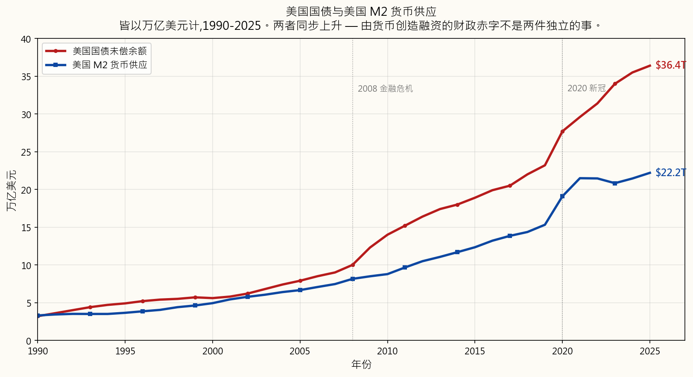
这就是当下的宏观环境，它对你能够投资什么有直接影响：
复利这个数学概念本身是真实且重要的——利滚利确实以指数方式增长，代数运算是正确的。不真实的是教材描绘的那条平滑、无风险的8%曲线。这条曲线所采用的货币正以每年7-15%的速度被创造出来。在教材所引用的那种水平上，不存在无风险的实际回报。真正的问题是：哪些资产能够跑赢印钞机，在什么价格下值得持有？
2.3 实际收益与名义收益：唯一诚实的衡量尺度
名义收益是你看到的头条数字——"标普500去年回报26%。"实际收益是名义收益减去通胀——你真正获得的购买力增长。
一个快速近似公式：
$$ r_{\text{实际}} \approx r_{\text{名义}} - i $$
精确的关系（费雪方程式）是：
$$ r_{\text{实际}} = \frac{1 + r_{\text{名义}}}{1 + i} - 1 $$
在低通胀时，近似公式已足够用于心算；在高通胀或高收益的情况下，精确形式更为重要。在名义收益26%、通胀7%的情况下，近似公式给出19%；精确答案是17.8%。在正常通胀水平下差距较小，但差距随两者数值的增大而扩大。
诚实的数据表——美国各资产类别扣除通胀后的历史实际收益：
| 资产类别 | 名义值（长期平均） | 实际值（扣除通胀后） | 跑赢通胀？ |
|---|---|---|---|
| 美国股票（标普500，股息再投资） | ~10% | ~7% | 是，可靠 |
| 黄金 | ~7% | ~3–4% | 是，在长期视角下（1971年后） |
| 房地产（广义，含租金） | ~9% | ~3–4% | 是，在长期视角下 |
| 美国债券（10年期国债，长期平均） | ~5% | ~1–2% | 勉强——且在2010年代和2020年代并非如此 |
| 美国国债短期券（现金等价物） | ~3.5% | ~0% | 否，2008年后 |
| 储蓄账户 | ~1–2% | ~-2至-5% | 否 |
| 现金（存抽屉） | 0% | ~-3至-7% | 否 |
表头写着"长期平均"，而"长期"这两个字承载了太多含义。债券在完整历史数据上平均确实带来了正的实际收益，但这个平均值是被1982-2020年反通胀债券牛市拉高的——那是一个利率持续下行、长达40年的牛市，将债券变成了一台总收益引擎。在2020年代，10年期国债带来了深度为负的实际收益；债券牛市已经终结，缔造它的宏观环境（见§2.2）已经逆转。
因此，以当今宏观环境诚实解读这张表，可靠地跑赢通胀的资产清单已大幅缩短：
- 股权（广义上，包括通过指数基金或直接持有的可生产性企业所有权）
- 黄金及其他货币金属
- 可生产性房地产（有现金流，而非生地）
- 特定大宗商品（在周期的适当阶段）
这是本课程其余内容的基础性纪律。我们研究的每一类资产、我们讲授的每一种策略，都将以这个单一标准加以评估。名义收益不过是一场表演。实际收益才是唯一能够支付你未来生活账单的东西。
3. 常见误区
误区一："我应该把钱存在储蓄账户里，那样才安全。"
在真实通胀超过5%的环境中，一个只提供1-2%收益的储蓄账户，是你能持有的负实际收益最激进的头寸之一。它感觉安全，因为名义数字不会下降。但它并不安全——它是一种缓慢的、几乎无法察觉的出血。而正是这种缓慢，使它变得危险：那些"求稳"的人，往往在意识到游戏本就不公平之前，就已经损失了数十年的购买力。
误区二："教材里8%复利的图表展示了投资的结果。"
它展示的是如果8%实际无风险收益存在时会发生什么。它们不存在。国债短期券在2008年后的大部分时间里提供的实际收益率约为零。标普500的名义平均值约为10%，但这是通过上涨30%的年份、下跌40%的年份和毫无起色的整个十年才实现的——从来都不是一条平滑的线。教材把那张图画成直线，是为了让复利看起来像数学题；而在现实中，它是一条充满噪音和回撤的攀爬之路，需要投资者拥有在每次回撤中坚持买入的心理能力。那才是真正的难点，而教材的图表把它藏起来了。
误区三："债券是我投资组合中对冲通胀的安全部分。"
在1982-2020年反通胀时代，债券确实是通胀对冲工具——这是历史上最长的债券牛市。那个时代已经结束。在央行被政府债务利息逻辑所掌控的今天（§2.2），高等级债券的实际收益率在2010年代和2020年代的大部分时间里都是负的。"债券求稳"这条原则，是对一个已不再适用的时代的近因偏误。今天的债券是久期赌注，不是通胀对冲工具。
误区四："新闻里的CPI数字就是真实的通胀。"
CPI是一种测量方式的选择，而非客观事实。它采用质量调整（功能更好的新产品被视作价格下降，即使你仍然支付全价）、替代权重（你越来越买不起的东西在篮子中的权重越来越小，理由是你会减少购买）；在美联储偏好的核心PCE变体中，还将食品和能源排除在外——也就是说，对家庭打击最大的价格，被从政策相关指标中移除了。这三种方法论选择都朝着同一个方向推低公布的数字。请以实际感受到的通胀率而非政治性数字，作为你投资目标回报率的锚点。
误区五："72法则告诉我资金翻倍需要多长时间。"
它告诉你的是，在恒定收益率下，资金翻倍需要多长时间。恒定收益率在教材例题之外根本不存在。真实收益是一个包含波动性、回撤和宏观周期转换的序列；法则所说的"以8%收益9年翻倍"对序列中间出现的2008年那样的年份毫无参考意义。这个法则是一道可爱的心算题，只在教材已经为你画好的虚构世界里有效。
误区六："上涨10%后再下跌10%，我回到了原点。"
数学上是错误的。100美元上涨10%=110美元。然后110美元下跌10%=99美元。你亏损了1%。损失比等幅的盈利更具伤害性，因为盈利的百分比是基于亏损后更小的本金来计算的。下跌50%，需要上涨100%才能回本。下跌90%，需要上涨900%才能回本。
| 亏损幅度 | 回本所需涨幅 |
|---|---|
| -10% | +11.1% |
| -20% | +25.0% |
| -30% | +42.9% |
| -50% | +100.0% |
| -75% | +300.0% |
| -90% | +900.0% |
从数学上看，在亏损幅度为 \(L\) 之后，回本所需的涨幅为
$$ G = \frac{L}{1 - L} $$
当 \(L\) 较大时，这个值的增长速度远快于 \(L\) 本身。这就是为什么管控下行风险比最大化上行收益更重要，也是为什么那条从未出现过50%回撤的国债短期券路径，从心理层面来看并不比股权路径差——尽管从长期实际收益来看，股权路径最终胜出。
误区七："投资就是赌博。"
赌博的预期收益是负的——赌场永远赢，数学期望是让你输。投资可生产性资产（持有代表对真实企业真实现金流索取权的股权），历史上具有正的预期收益——你因为提供了资本和承担了风险而获得回报。对个股的短期投机可能类似于赌博。对可生产性股权的长期分散化持有，从根本上是不同的，数学数据也印证了这一点。
误区八："我需要很多钱才能开始投资。"
不需要。大多数券商提供零门槛和股份零碎购买服务。限制性约束很少是第一笔存款的规模；而是在不可避免的回撤中坚持持续存入的纪律。一个从25岁开始每月投入100美元到宽基指数基金，并在此后四十年每一次30%的熊市中都坚持持有的人，最终会远远领先于一个25岁时一次性投入5万美元、在第一次回撤时慌忙退出、此后再也没有重新入场的人。行为决定结果，本金大小是其次。
4. 常见问题解答
问题1：如果教材里8%的图表是童话，我实际上应该预期多少收益？
答：两个诚实的答案，都有参考价值：
- 对于美国宽基股票（标普500，股息再投资），长期名义平均值约为10%，扣除官方CPI后的长期实际平均值约为7%。 如果你认可影子CPI的批评，可将实际收益下调1-2个百分点，大约落在5-6%实际收益区间。
- 路径不是平滑的。 在任何给定年份，市场可能上涨30%，也可能下跌30%。那10%的平均值只在很长的时间维度（20年以上）才会显现，即便是长期视角也包含了多年横盘或下跌的区间（2000年代的"失落十年"以实际价值计算低于起始点）。按均值规划，按波动性调整仓位。
问题2：你为什么说72法则没用？它在数学上是正确的。
答：数学在恒定收益率的前提下是正确的。问题在于恒定收益率并不存在——它是教材的抽象简化。在现实世界中，收益率是有时序、有波动性、有宏观周期转换的序列，而时序非常重要：序列早期的一个-40%年份造成的损害，远大于晚期的同等损失，因为早期有更多本金需要承受损失。72法则对收益序列风险没有任何参考意义，而那恰恰是你真正承担的风险。作为验证某个引用平均利率的合理性工具，该法则还可以接受。作为规划工具，它具有误导性。
问题3：为什么我不能相信官方CPI？
答：三种方法论选择，均为逐步引入，且都朝着压低公布数字的方向推进：
- 质量调整（功能更多的新产品被视作价格下降，即使你仍然支付全价）；
- 替代效应/几何权重（你越来越买不起的商品在篮子中的权重越来越小，理论依据是你会减少购买）；
- 核心通胀（食品和能源被排除在美联储偏好的PCE指标之外——即对家庭打击最大的价格，被从政策相关数字中移除）。
问题4：如果债券不再跑赢通胀，为什么券商仍然推荐它们？
答：两个原因。首先，这个推荐是1982-2020年宏观环境的产物，在那个时代债券确实大幅跑赢通胀——券商培训、财务规划模型和整套股债6/4投资组合的正统理论，都是在那个宏观环境下建立的，尚未完全更新。其次，债券仍然能做好一件事：降低投资组合的短期波动性。它们是波动性对冲工具，而不是通胀对冲工具。如果对回撤的心理承受能力是约束你投资行为的关键因素，债券可能仍有其一席之地——只是不要在当前宏观环境下将其误认为通胀对冲工具。
问题5："货币超发"与政府财政赤字有什么区别？
答：如今两者几乎是同一回事。当政府出现财政赤字时，它发行债券。历史上，这些债券会出售给私人投资者——养老基金、外国央行、储蓄者——由他们用既有资金为支出提供资金。那不是货币超发。然而，自2008年以来，央行（美联储、欧洲央行、日本央行）一直例行公事地用新创造的准备金大量购买新发行的政府债券。那才是货币超发——财政赤字是用新增货币而非既有储蓄来融资的。这一区别很重要：债券融资的财政赤字不会直接导致货币贬值；而央行融资的财政赤字会。现代财政赤字以后者为绝对主流。
问题6：通胀对每个人的影响一样吗？
答：不一样。官方CPI是基于代表性消费篮子的全国平均值；你的个人通胀率取决于你实际的消费支出结构。有三类群体感受到的通胀高于官方数字：
- 租房者（住房通胀在大多数周期中高于CPI）；
- 退休人员和长期患病者（医疗和处方药通胀远高于CPI）；
- 就读私立学校或美国大学的家庭（教育通胀在过去二十年中约为CPI的两倍）。
问题7：我应该先还清债务再投资吗？
答：将债务的税后利率与投资的预期实际收益进行比较。年化利率超过20%的信用卡债务是财务紧急状态——还清债务相当于获得有保证的20%回报，优于任何股权投资。而在真实通胀6%的环境下，4-5%利率的房贷实际上是负实际利率——通胀正在帮你偿还债务，激进还款并非最优选择。通行规则：优先还清利率约7%以上的所有债务，然后再投资。（同时检查债务是否可以税前扣除——在某些司法管辖区，房贷利息可以扣除，这会进一步降低实际利率。）
问题8：复利会对我不利吗？
答：会，而且这是避免高利率债务最被低估的理由。一笔5,000美元的信用卡欠款，年化利率24%，如果不偿还，五年后将增长至14,615美元。复利不在乎它运行的方向；那种通过长期股权持有积累财富的数学力量，同样会通过未偿债务摧毁财富。消除高息债务，是大多数人所能获得的回报最高的"投资"，而且是零风险的。
问题9：如果只有股票能可靠地跑赢通胀，为什么还要持有其他任何资产？
答：因为路径与终点同样重要。纯粹的100%股权投资组合，在某个十年里必然会让你经历超过50%的回撤。如果你在底部卖出——而大多数人会这样做，因为他们夜不能寐——你便失去了持有股权的长期实际收益优势。对黄金、现金以及（对某些投资者、在某些宏观环境下）债券的一定配置，是行为层面的保险：它减少了你必须经历的回撤幅度，让你在最关键的时刻坚守股权仓位。资产配置是本课程后续几周的核心议题。目前，核心结论是：股权是收益引擎；其他一切都是平滑函数。
问题10：黄金没有任何收益率，它怎么能跑赢通胀？
答：黄金跑赢通胀不是通过收益率实现的——它根本没有收益率。黄金通过在正被贬值的货币中进行价格上涨来跑赢通胀。自1971年美国放弃金本位以来，黄金价格从约35美元/盎司上涨至今天的2,500美元以上——名义上约为70倍，以实际（经通胀调整）购买力计约为4-5倍，历时55年。黄金实际上是做多货币贬值的头寸：美联储每创造一美元新增货币，最终都要找到归宿，而历史上有相当大的比例流向了货币金属。本课程将多次回顾黄金和价值储藏资产的话题。
第二部分：视频脚本
视频标题： 为什么要投资？教材里的图表是个谎言 | 投资课程第一周
目标时长： 约25分钟
主持人：
- 陳馬（讲师）：经验丰富的散户投资者，从多年市场经历中讲解各类概念
- 小魚（学生）：刚刚大学毕业、正在学习如何投资储蓄的年轻人，提出观众心中正在思考的问题
[开场序列]
[VISUAL: 带有文字"投资基础——第一周"的动画片头logo]
[ANIMATION: A textbook opens. A perfectly smooth exponential curve labelled "$10,000 at 8% per year" draws itself across the page. The line then cracks like glass and shatters into a jagged real-world price chart underneath.]
陳馬： 欢迎来到第一周。我是陳馬，今天这节课，我要拿起锤子，把每本理财书都拿来开篇的那张图打碎。
小魚： 我是小魚。我刚刚毕业，手头有些积蓄放在银行账户里，想搞清楚到底该怎么处置它们。所以我会提出你们心里可能也在问的那些问题。
陳馬： 今天我们来回答金融领域最基本的问题：为什么要投资？我想从推翻教材给出的答案开始。因为那个答案是错的，在我整个投资生涯里都是错的。
小魚： 开场挺猛的。
陳馬： 我们开始吧。
[VISUAL: 分节标题——"第一节：教材里的图表是个谎言"]
[第一节：教材里的图表是个谎言]
小魚： 好，在我们开始录制之前，你让我找出每本投资书都会在开头放的那张图表。我已经找到了。10,000美元，每年8%，三十年后你成了百万富翁。那条线真的很好看，一路向上弯曲，永无止境。
[ANIMATION: The smooth $10,000-at-8%-for-30-years textbook chart draws itself on screen, with the satisfying "you are a millionaire" caption.]
陳馬： 那张图是个童话。我想请你告诉我，在2026年，哪里能找到稳定的、无风险的每年8%收益？
小魚： 呃……国债短期券？
陳馬： 在2008年后的大部分时间里，国债短期券的收益率大约只有0.5%。投资级公司债在2022年崩了——那是现代史上债券最糟糕的一年。标普500的平均值确实大约是10%，没错——但那是通过上涨30%的年份、下跌40%的年份，以及整个毫无起色的十年才实现的。从来都不是一条平滑的线。
小魚： 所以那张图不是错的，只是……不真实？
陳馬： 它被画成直线，是为了让投资看起来像一道有保证答案的数学题。它不是。没有无风险的8%。从来就没有过。一旦你以为有，你就会做出所有错误的决定——低估风险、在第一次回撤时慌了神，然后觉得是教材骗了你。教材确实骗了你，只不过方式和你以为的不一样。
小魚： 好，那72法则也一起扔进垃圾桶吗？
陳馬： 直接扔进去。72法则说你的资金以8%的收益每九年翻一倍。数学上没错——但那是在恒定收益率的前提下。问题是恒定收益率并不存在。它是教材的抽象简化。一旦你用真实的收益序列替换那个常数——序列中间有一个2008年，有一个2022年——法则就失效了。收益的时序至关重要，而这个法则对此毫无参考意义。它是一个只在教材已经为你画好的虚构世界里才管用的把戏。
小魚： 那它为什么出现在每一本金融书里？
陳馬： 因为它让教材作者的工作变得轻松，也让读者觉得自己聪明了。这两件事，在市场下跌40%的时候，对你毫无帮助。
[VISUAL: 分节标题——"第二节：你已经在跑的那场比赛"]
[第二节：你已经在跑的那场比赛]
小魚： 好，如果图表是谎言，72法则是没用的，那为什么还要投资？我是认真问的。为什么不把积蓄存在银行就算了？
陳馬： 因为不这么做更糟糕。这是没有人在你毕业开第一个支票账户时告诉你的事情：你已经身处一场赌局之中了。你没有选择它。这场赌局押注的是你银行账户里的现金能够保持购买力。
小魚： 而它做不到。
陳馬： 做不到。通胀是每一位投资者都必须对抗才能原地踏步的引力。这场比赛的基准线不是零。不是"我的账户数字涨了吗？"这场比赛的对手是通胀。所以问题从来不是"我该不该承担风险？"——因为你已经在承担风险了。无论你是否行动，你都在承担通胀风险。真正的问题是，哪种风险会为你的承担而给予回报。
[ANIMATION: A runner on a treadmill labelled "通胀". The treadmill is moving backward at 3-5% per year. The runner labelled "现金" stands still and is being carried backward off-screen. The runner labelled "债券" jogs at the same pace as the belt and stays roughly in place. The runner labelled "股票" outruns the belt and moves forward.]
小魚： 所以通胀是对手，不是市场。
陳馬： 通胀是唯一重要的对手。本课程中的一切——每一类资产、每一种策略、每一个仓位规模——都要对照同一个问题来评估：在我能够持有的时间维度内，扣除税费后，它能不能跑赢通胀？如果能，它在投资组合中就有一席之地。如果不能，就没有。本节课的其余部分，就是要告诉你哪些东西真正能跑赢通胀。因为答案比你想象的要简短。
[VISUAL: 分节标题——"第三节：你看到的CPI，不是你实际支付的通胀"]
[第三节：你看到的CPI，不是你实际支付的通胀]
小魚： 好，在讲什么能跑赢通胀之前——我们能先退一步吗？当新闻说"通胀达到2.6%"，那个数字是什么？
陳馬： 那是消费者价格指数，CPI。由美国劳工统计局发布。美联储的目标是每年约2%。你的养老金生活成本调整、社会保障涨幅、税级、通胀保护债券——全都与它挂钩。
小魚： 明白了。那这个数字是真实的吗？
陳馬： 这个数字是一种测量方式的选择。而这种选择已经被多次修改，且每次修改无一例外地压低了公布的数字。有三个你需要了解的具体把戏。
小魚： 三个把戏，说来听听。
陳馬： 把戏一：质量调整。新款iPhone有更好的摄像头、更大的存储空间、更快的芯片。售价跟去年一样。美国劳工统计局说：你用同样的价钱买到了更多的产品——这是通缩。于是他们在CPI中把iPhone的价格向下调整，以反映"额外价值"。
小魚： 等等。货架上的价格没变，但在通胀数字里，它算作价格下降了？
陳馬： 没错。汽车也是一样——新的安全配置意味着在CPI里这辆车"更便宜"了，即使标价更高。笔记本、冰箱、洗衣机，都是如此。问题在于，你买的不是iPhone的功能。你买的是一部iPhone。你实实在在地掏出了货架上的全价。质量调整把产品质量提升视作价格下降，自上世纪90年代末以来一直在应用。博斯金委员会1996年的自身估算是，质量调整和替代效应合计使公布的CPI每年降低约0.5至1个百分点。年年如此，不断复利。
小魚： 那你认为官方数字实际上低估了多少？
陳馬： 有一个叫ShadowStats的服务，它用1980年前的方法论重建了CPI序列。它的读数通常比官方数字高5至7个百分点。主流经济学家批评ShadowStats本质上只是叠加了一个接近固定的偏差量，而非完整地重算篮子。这一批评是有道理的——我不认为实际感受到的通胀比CPI高出整整6个点。但方向上的信息是对的：现实生活中的通胀实质性地高于头条数字。
[VISUAL: 影子CPI叠加图表——image/week01_shadow_cpi.png。两条线从1980年到2025年：官方CPI在2-4%附近波动，ShadowStats高出5-7个百分点，差距在上世纪90年代初方法论调整后开始显现。]
小魚： 好，把戏二。
陳馬： 核心通胀。美联储实际上的目标不是头条CPI，而是核心PCE。PCE是个人消费支出，采用稍微不同的消费篮子——它本身就比CPI低约0.3个百分点。然后"核心"意味着：以食品和能源波动性较大为由，将二者剔除。
小魚： 剔除食品和能源。这两样是每个家庭每周实际花钱最多的东西。
陳馬： 每个家庭首先要为之付费的两样东西。理由是它们月度间波动较大。但结构性效果与质量调整如出一辙：公布的数字低于人们的实际感受，而美联储就是依据这个数字来制定利率的。
小魚： 把戏三？
陳馬： 替代效应。如果牛肉价格上涨，美国劳工统计局假设你会转而买鸡肉。于是他们降低牛肉在篮子中的权重。从数学上看：你越来越买不起的东西，在通胀指标里的权重越来越小，恰恰是因为它变贵了。这叫做几何权重，于上世纪90年代末引入。1980年前的方法论使用算术权重，不会因为你被价格拒之门外而这样惩罚你。
小魚： 这真是太绝了。涨价最多的东西，计入通胀的权重最小。
陳馬： 对。现在问问自己，谁为这种低估买单。你的养老金生活成本调整与人为压低的官方CPI挂钩。你的社会保障涨幅与它挂钩。你的税级与它挂钩。通胀保护债券TIPS的收益率与同样被低估的CPI挂钩。你的工资谈判以它为锚点。美联储依据它制定利率。如果政府连续20年低估2%的通胀，这会对所有收入与CPI挂钩的人造成累计约49%的实际削减。
小魚： 所以当你设定投资目标回报率——也就是真正保住购买力所需的收益率——你不该以官方CPI为锚点。
陳馬： 拿官方数字，加上至少几个百分点以体现真实情况。如果他们说CPI是2.5%，那就规划至少需要4.5到5%的实际收益，才能大体原地踏步。那才是真正的门槛。低于这个水平，你就在倒退，只是银行账单在对你撒谎。
[VISUAL: 分节标题——"第四节：通胀从何而来——货币超发"]
[第四节：通胀从何而来]
小魚： 好，我们知道官方通胀数字低估了现实。但通胀本身从哪里来？也就是说，根源是什么？
陳馬： 教材的答案是"过多的货币追逐过少的商品"。技术上没错，但对你毫无帮助。诚实的答案是：央行创造了货币，政府花掉了它。现代通胀，说到底，是一种货币现象。他们印了钞票。
小魚： "印了钞票"。给我看证据。
陳馬： 看看各主要货币过去二十五年的广义货币供应量——这是M2，也就是流通货币加支票存款加储蓄存款加零售货币市场基金——以2000年为基准（100）进行指数化。
[VISUAL: 全球M2图表——image/week01_money_supply.png。对数刻度，从2000年到2025年，五条线：美元、欧元、日元、人民币、台币。每条线都在攀升。人民币攀升最快。每条线在2020年都有明显的垂直跳升。]
小魚： 全都在涨。
陳馬： 每一种主要货币，无一例外。所有线条在2020年后的垂直攀升——那是新冠疫情时代的应对措施。同步的全球货币创造，是现代史上规模最大的和平时期货币扩张。
小魚： 等一下，连港元？连台币？
陳馬： 连港元。港元与美元挂钩，所以美国印钱，香港实际上也在输入这种印钱效应。台湾类似，但独立性稍强一些。日元、欧元、人民币——所有人都在印。没有任何一种主要货币是"诚实的"避风港。这就是我们所处的宏观环境。
小魚： 那如果每种货币同时都在贬值，这对价格意味着什么？
陳馬： 这意味着以那些货币计价的东西——资产、实物商品、黄金——看起来像是在涨价。它们并不是真的在涨。是量尺在缩小。这是故事的另一半。
[VISUAL: 美国M2与美国国债图表——image/week01_us_debt_m2.png。两条线从1990年到2025年，均以万亿美元计，显示在同一坐标轴上。两条线以相同的拐点一同攀升——2008年全球金融危机，2020年新冠疫情。国债余额约36万亿美元，M2约22万亿美元。]
陳馬： 美国国债与美国M2，放在同一坐标轴上，都以万亿美元计。它们一起攀升，拐点完全相同——2008年全球金融危机、2020年新冠疫情。它们是同一行为的两面。当政府出现财政赤字，它发行债券。当央行用新创造的准备金购买这些债券——这正是量化宽松的本质——那就是债务货币化。今天的支出，用明天印出的钞票来偿还。
小魚： 债务现在已经36万亿了？
陳馬： 36万亿。这里有个关键点，因为这决定了未来十年你能投什么、不能投什么。那笔债务的平均收益率每上升1%，大约就是3,600亿美元的额外年度利息支出。相当于整个美国国防预算的约60%。所以将名义利率通过央行购债等手段保持在人为低水平的政治激励，是巨大的。
小魚： 他们不能让利率上升。
陳馬： 他们不能让实际利率出现有意义的上升。这意味着——这是核心结论——债券不再是可靠的通胀对冲工具。当政府既有手段（一家被掌控的央行）又有动机（债务利息的数学逻辑）将名义利率维持在真实通胀率以下时，债券的实际收益率便会系统性地为负。这有一个名字，叫做金融抑制。而这正是使得从1982年到2020年行之有效的整个股债6/4投资组合在未来存在结构性隐患的原因。
小魚： 等等，债券曾经能跑赢通胀，对吗？我父母那一代持有债券，过得挺好的。
陳馬： 你父母那一代经历了历史上最长的债券牛市。从1982年到大约2020年，利率从15%一路下降到接近零。利率下降意味着债券价格上涨，叠加票息收入。这是长达40年的顺风车。那个时代已经结束了。利率不会从这里再实质性地走向负值。使债券成为通胀对冲工具的反通胀顺风已经逆转。所以当你的券商——他们是在八九十年代接受培训的——对你说"债券求稳"，他们是在复述一条来自已不再适用的时代的规则。
[VISUAL: 分节标题——"第五节：三位储蓄者——什么真正能跑赢通胀"]
[第五节：三位储蓄者]
小魚： 好。我们讲了教材图表的谎言，讲了通胀才是真正的对手，讲了CPI被低估，讲了央行印钞。现在请告诉我，什么真的能跑赢通胀。因为我有点紧张了。
陳馬： 好。保持这种感觉，因为这才是正确的反应。让我用真实的55年市场历史数据，通过三种不同的方式来使这一点具体化。三位储蓄者。他们从1971年开始——这是美国放弃金本位的那一年，意义重大，后续课程我们会回到这个话题。
小魚： 三位储蓄者，计划相同？
陳馬： 计划相同。每人每年整整存入10,000美元。相同的名义金额，55年如一日。不择时入市，不耍花招，只是纪律严明地储蓄。唯一不同的是存放的地方。
小魚： 好。A君？
陳馬： A君将钱留作现金。没有银行，没有利息。纯粹的货币，放在抽屉里。B君将钱存入美国短期国债——地球上最安全的计息工具。C君将钱投入标普500指数，股息全部再投资。
[VISUAL: 三个投资组合图表——image/week01_three_portfolios.png。对数刻度图表，从1971年到2025年。现金线性增长至55万美元。国债短期券曲线增长至173万美元。标普500线条爆炸式上涨至4,200万美元。]
小魚： 存入的资金相同，时间跨度相同，都是55年。
陳馬： 每个人总共存入了整整55万美元的自有资金。现在看看他们最终在哪里。A君，现金储蓄者，最终有55万美元——只是历年存款的累加，没有任何增长。B君，国债短期券储蓄者，最终约有173万美元。C君，标普500投资者，最终有4,200万美元。
小魚： 4,200万美元。每年同样的10,000美元。
陳馬： 每年完全相同的10,000美元。但这里是本节课的落脚点，因为名义数字会说谎。让我把三者都换算成1971年的购买力——换算成真实的钱。
小魚： 好的。
陳馬： C君，标普500投资者：4,200万美元名义值，换算成1971年美元约为500万美元。实际购买力增长：巨大。B君，国债短期券储蓄者：173万美元名义值，换算成1971年美元约为20.8万美元。扣除通胀后勉强为正。记住，这还包括了国债短期券年化收益达两位数的1980年代。剔除那些年份，情况要糟糕得多——而那正是我们当下所处的环境。
小魚： A君呢？
陳馬： A君，现金储蓄者，共存入了55万美元的自有资金。经历55年通胀之后，实际购买力换算成1971年美元约为6.6万美元。勤勤恳恳储蓄了55年，最终获得的实际购买力，相当于约六年半的存款。现金不是没有增长，而是在A君兢兢业业的同时，通胀主动将它蚕食殆尽。
小魚： 太残酷了。现金储蓄者因为做了感觉最安全的事而受到了惩罚。
陳馬： "安全"的做法，是最危险的做法。它是一种缓慢的、几乎无法察觉的出血。而正是这种缓慢，使它变得危险——那些求稳的人，往往在意识到游戏本就不公平之前，就已经损失了数十年的购买力。
小魚： 而C君的胜出，不是因为标普500带来了神奇的平滑10%。
陳馬： C君经历了1973-74年的熊市、1987年的股灾、2000-2002年的互联网泡沫破灭、2008年的金融危机，和2020年的新冠股灾——然后就是继续存款、继续持有。股票的胜出，不是因为路径容易，而是因为在三者都与货币贬值赛跑的过程中，股票是唯一一个能够可靠跑赢的资产。
小魚： 那如果我从这个视频只带走一张图，就是这张。
陳馬： 这是你在本课程余下学习中应该始终铭记于心的画面。比赛的对手是通胀。赢得这场比赛，复利便为你效力。输掉它，再多的纪律都救不了你。
小魚： 诚实地解读这张图：在当前宏观环境下，只有股票能可靠地跑赢通胀。
陳馬： 股票。加上我们后续几周会深入讨论的少数实物资产——黄金、可生产性房地产、特定大宗商品。它们之所以能跑赢通胀，是因为它们以实物计价，而非以政府正在贬值的货币计价。债券在1982年至大约2020年的反通胀周期里曾经在这份清单上。今天不在了。这就是整份简短的清单。
[VISUAL: 以动画形式出现在屏幕上的一份缩短的清单。 今天能可靠跑赢通胀的资产：
- 股权（对可生产性企业的广义持有）
- 黄金及货币金属
- 可生产性房地产（有现金流，非生地）
- 特定大宗商品（在周期的适当阶段）
陳馬： 其他一切，以实际购买力计算，都是赔本的赌注。在真实通胀6%的环境中，一个提供4%收益的"高收益"储蓄账户，每年仍在损失2%。同样环境下，国债短期券给你5%，每年仍在损失1%。账户数字在增长这一事实，与你的购买力无关。唯一重要的问题是：我在跑赢印钞机吗？
[VISUAL: 分节标题——"第六节：三点总结"]
[第六节：总结]
陳馬： 好，我们来收尾。第一周你带走三点。
[VISUAL: 三张编号卡片以动画形式依次出现。]
陳馬： 第一点：教材里的图表是个童话。没有无风险的8%。任何拿一条平滑指数曲线当预测的人，都是在向你推销什么。
小魚： 把那条平滑曲线扔掉。
陳馬： 第二点：你已经身处一场赌局——押注现金能保值。它不能。通胀是对手。这场比赛不是对抗零，而是对抗央行的印钞机。而官方通胀数字每年都低估了这场比赛的强度，差了几个百分点。
小魚： 所以我的实际目标回报率，比新闻数字要高。
陳馬： 对。规划至少需要4到5%的实际收益，才能大体原地踏步。第三点：回顾过去55年的真实数据，只有股权——加上我们后续会涉及的少数实物资产——可靠地赢得了这场比赛。债券曾经能做到，现在不行了。现金从来就做不到。本课程其余内容的使命，是教你如何持有那些能跑赢印钞机的资产，以及在什么价格下值得持有。
小魚： 那张三位储蓄者的图呢？A君实际购买力6.6万美元，B君20.8万美元，C君500万美元，55年之后。那张图我要留着。
陳馬： 那是核心。如果你从这个视频只截一张图，截那张。把它贴在你的显示器上。每次你因为觉得更安全而想着"多留点现金"的时候，看一眼它。
小魚： 好。那下周呢？
陳馬： 下周我们开始回答怎么做的问题。对于普通投资者而言，持有可生产性企业广义股权所有权最简单、最便宜、也最经过验证的方式，是指数基金和交易所交易基金。为什么大多数专业基金经理都跑不赢它们。它们实际上是怎么运作的。该买什么，该避开什么。那是第二周的内容。
小魚： 明白了，下周见。
陳馬： 感谢收看。如果这正是你毕业时希望有人给你上的那种投资课，请订阅，不要错过第二周。到时见。
[ANIMATION: 片尾卡。开场破碎的教材重新拼合，但这次书页上的曲线是锯齿状的、真实的，而不是平滑的。订阅按钮图形。"下周：指数基金与交易所交易基金"预告卡。]
[结束]
本集动画参考：开场教材破碎动画、通胀跑步机、M2全球扩张、债务与M2平行攀升、三位储蓄者赛跑。引用图表：image/week01_three_portfolios.png、image/week01_shadow_cpi.png、image/week01_money_supply.png、image/week01_us_debt_m2.png。
下一课：course/week02_index_funds_etfs.md